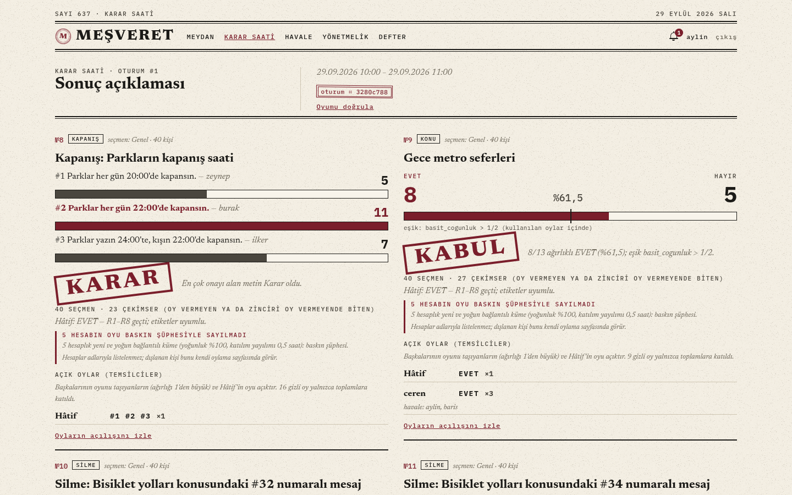
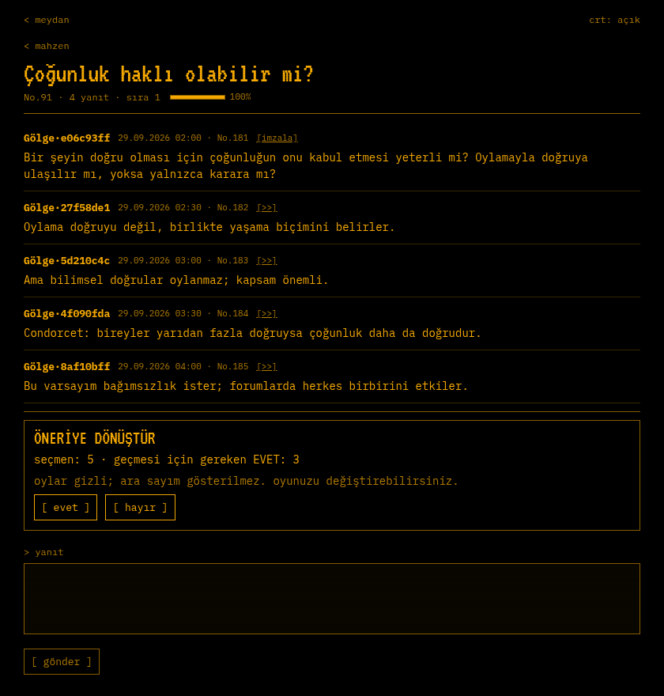
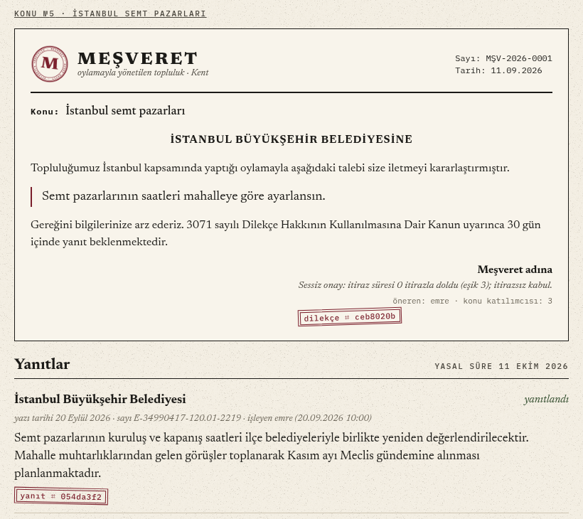
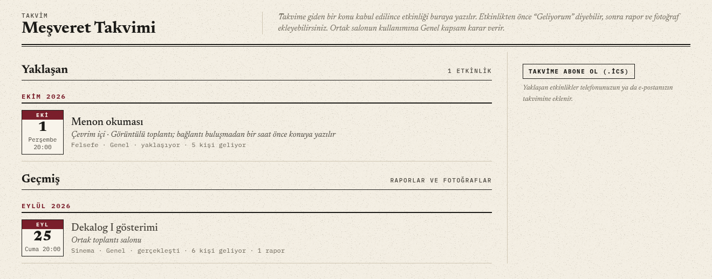
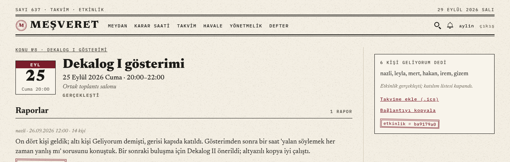
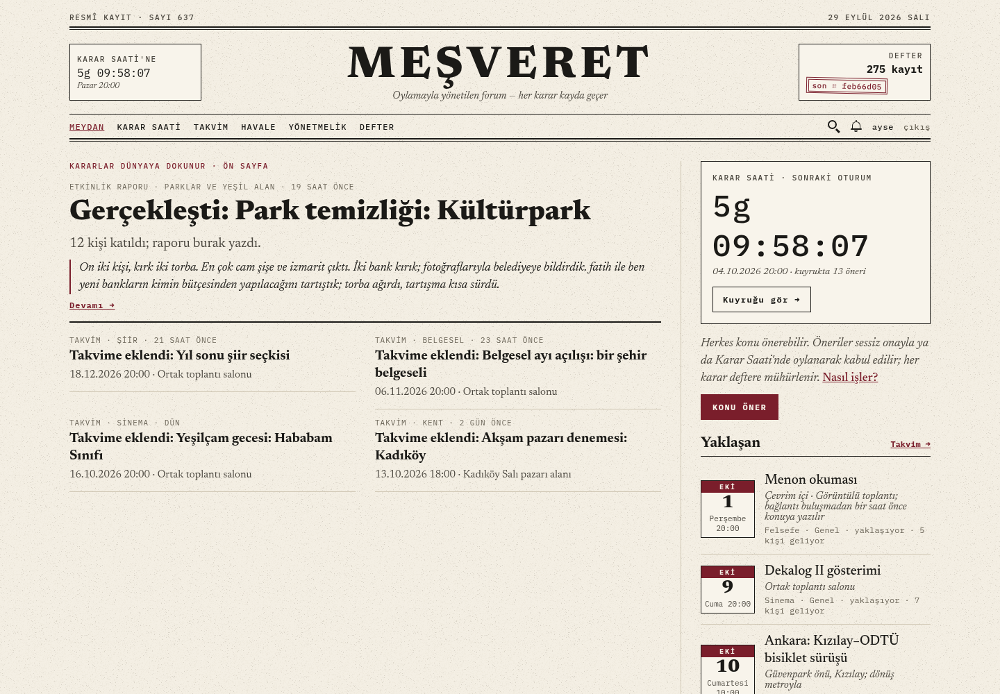
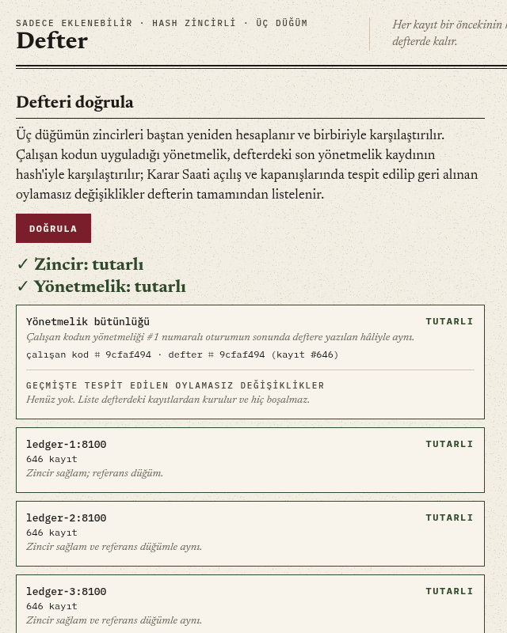
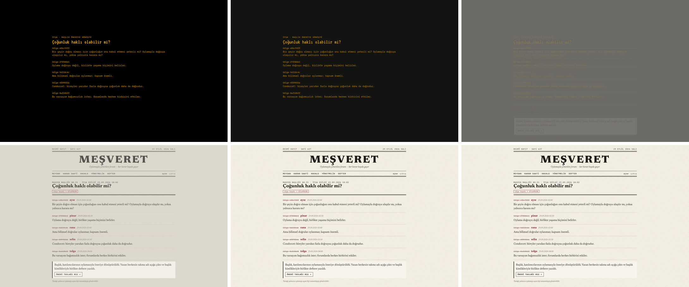

Meşveret'te konular, kurallar ve silmeler oylamayla değişir; her karar üç düğümlü bir deftere mühürlenir ve bir muhataba iletilir: takvime ya da bir kuruma. Tasarımın merkezindeki sorun çoğunluğun azınlığı ezmesidir. Sistem bunu ortadan kaldırmaz; kapsam, eşzamanlı çoğunluk, nitelikli çoğunluk, şerh, gizli oy ve değiştirilemez maddelerle sınırlar.
Rapor dört bölümdür. Birinci bölüm problemi ders notlarındaki yöntemle çerçeveler: iş hedefinden karara ve göreve giden huni, problem kanvası, paydaşlar, kısıtlar ve ön-otopsi. Ardından her karar noktası için yapay zekânın gerekip gerekmediğini sorar, başarı metriklerini üç katmanda tanımlar ve veriden karar üreten tek bileşeni, baskın tespitini temel çizgilere karşı ölçer. İkinci bölüm kodun tasarım desenleriyle yeniden düzenlenmesini anlatır: bulunan anti-desenler, uygulanan desenler, uygulanmayanlar ve gerekçeleri. Üçüncü bölüm sistemin kurallarını, dördüncü bölüm karşılaşılan sorunları, bilinçli açıkları, testleri ve yapay zekâ kullanım beyanını içerir.
Baskın tespiti iki döngüde incelenir: önce CRISP-DM'in altı aşamasıyla tohum verisinde (§8), sonra temel çizgilere karşı ölçülerek (§9). İkinci bölüm sistemin veri modelini, Neo4j ontolojisini, PostgreSQL tablolarını, HTTP arayüzünü ve defterin protokolünü de verir (§12). Dördüncü bölümde arayüzün tasarım denetimi de yer alır (§35).
Gereksinimler aktörler ve kullanım durumlarıyla (§4), kavramlar alan modeli, nesne ve veri akış diyagramlarıyla (§5) verilir. İkinci bölüm sistemi UML'nin on dört diyagram türünün hepsiyle ve varlık–ilişki, graf şeması diyagramlarıyla ayrıca anlatır (§13–§18); diyagramlar rapor üretilirken koddan çizilir. Dördüncü bölüm git geçmişinden çıkarılan geliştirme takvimiyle başlar (§31).
Ekran görüntüleri çalışan sistemden, tohum verisiyle alınmıştır. Sistemin saati sahtedir: 29 Eylül 2026 Salı 10:00. Ölçümler ve tablolar ölçüm dosyalarından üretilir (docs/degerlendirme/); rapor docs/rapor/olustur.py ile yeniden oluşturulabilir. Ayrıntılı tasarım belgesi DESIGN.md, kurulum ve senaryolar README.md dosyasındadır.
"Önce doğru problemi bul, sonra problemi doğru çöz." Çerçeveleme hunisi iki düzeyde uygulandı: bütün sistem için ve veriden karar üreten tek bileşen olan baskın tespiti için.
| Basamak | Meşveret (bütün sistem) | Baskın tespiti |
|---|---|---|
| İş hedefi | Moderatörü olmayan bir topluluğun ortak kararları çoğunluk tiranlığına düşmeden alması ve kararların dünyada bir karşılığı olması | Oylama sonuçlarının topluluğun gerçek üyelerinin iradesini yansıtması |
| İş sorusu | Topluluk kararları neden meşruiyet kaybeder? Çünkü azınlık ezilir, kurallar keyfî değişir, silme sansüre döner, kararın sonucu görülmez. | Bir oylama, kısa sürede açılmış ve birbirine bağlı hesaplarla ele geçirilebilir mi? |
| Karar | Bu öneri kabul edilsin mi? Kim oy verir (kapsam), hangi eşikle, sonuç kime iletilir (muhatap)? | Karar Saati açılırken hangi hesaplar bu oylamanın paydasından çıkarılsın? |
| Tahmin ya da kural | Tahmin yok. Kurallar (R1–R9) ve eşikler yönetmelikte yazılıdır. | Hesabın koordineli bir kümenin parçası olup olmadığı |
| Görev türü | Kural tabanlı karar sistemi ve ağırlıklı sayım | Hesap başına ikili sınıflandırma; grafta kümeleme olarak da kurulabilir |
| Veri ve etiket | Yönetmelik, ontoloji (kapsamlar, alanlar, kaynak sahipliği), oylar | Katılım anları ve ETKİLEŞİM grafı. Gerçek etiket yok: tohumdaki beş baskıncı dışında kimin baskıncı olduğu bilinmez. Ölçüm etiketli bir benzetimle yapıldı (§9). |
Huninin son basamağı yapay zekâ kararını belirler: baskın tespiti için etiketli veri yoktur ve toplanması zordur, çünkü baskıncı kendini bildirmez (§6).
| 1 · İş hedefi ve değerModeratörsüz bir toplulukta kararları oylamayla almak, azınlığın kaynağını ve sesini korumak, kararı bir muhataba iletmek. | 2 · Karar ve eylemHer öneri için kabul ya da ret, seçmen kapsamı ve eşik; hızlı şerit sürekli (24 saat), Karar Saati haftada bir. |
| 3 · GörevKural tabanlı denetim (R1–R9) ve ağırlıklı sayım; baskın tespiti hesap başına ikili sınıflandırma. | 4 · VeriÜyelik, şehir, yaş grubu, ilgiler, oylar, etkileşim grafı; kişisel veri yalnızca sahibine görünür, defterde takma kimlik vardır. |
| 5 · Metriklerİş: dilekçe yanıt oranı, etkinliklerin gerçekleşmesi. Ürün: itiraz ve sessiz onay oranları. Model: kesinlik, duyarlılık, hata maliyeti. Koruyucu: yanlış işaretlenen üye (§7). | 6 · Temel çizgiModeratörlü forum ya da basit çoğunluk; baskın tespitinde rastgele, hiç kimse, basit kural, üretimdeki kural, öğrenen model. |
| 7 · KısıtlarTek kişilik ödev, sıfır bütçe, GPU ve ücretli servis yok; oy hakkını kısıtlayan karar açıklanabilir olmalı; dilekçede 30 gün. | 8 · Risk ve başarıÖn-otopsi bir sonraki bölümdedir (§3). Kabul: tohum senaryolarının testlerde beklenen sonucu vermesi; baskının gerçek üye dışlanmadan yakalanması. |
"Yapay zekâ destekli, demokratik ve güvenli bir forum geliştirilecektir."
Kullanıcı, karar ve ölçüt yok; çözüm (yapay zekâ) problemden önce seçilmiş.
"Moderatörü olmayan bir toplulukta her yapısal değişiklik bir öneridir. Sistem öneriyi kimin oylayacağını kaynağın sahipliğinden çıkarır, kararı bir muhataba iletir ve deftere mühürler. Başarı: tohumdaki senaryoların beklenen sonucu vermesi; bir şehrin payını başka şehre aktaran önerinin (№17) o şehrin ayrı oylamasında durması; baskın tespitinin gerçek üyeyi dışlamadan tohumdaki baskını yakalaması."
✓ kullanıcı ✓ karar ✓ görev ✓ metrik ✓ temel çizgi
Paydaşların ödünleşimleri yazılı karara bağlandı; kısıtlar seçimlerin bir kısmını baştan belirledi; ön-otopsi, sistemin altı ay sonra başarısız olduğunu varsayıp nedenlerini sıralar.
| Paydaş | İstediği | Kiminle çatışır | Sistemdeki karşılığı |
|---|---|---|---|
| Çoğunluk | Hızlı karar | Azınlığın vetosu | Sessiz onay, basit çoğunluk |
| Azınlık kapsamları (bir şehir, bir ilgi grubu) | Kendi kaynağına kendisi karar versin | Çoğunluğun hızı | R2, eşzamanlı çoğunluk, şerh, gizli oy |
| Öneri sahibi | Önerisinin görülmesi ve sonucu | İtiraz edenler | Olgunlaşma süresi, bildirimler, muhatap |
| Kurumlar (belediye, bakanlık) | Dilekçenin yetkili bir kapsamdan gelmesi | — | R9, 30 günlük yanıt süresi |
| Sunucuyu işleten | Sistemin çalışması | Herkes: kuralları oylamasız değiştirme gücü vardır | Defter, oylamasız değişiklik tespiti (veri düzeyinde) |
| Ders yürütücüsü | Gereksinimler, analiz, tasarım | — | DESIGN.md §16 eşleme tablosu, bu rapor |
| Baskıncılar (karşıt paydaş) | Bir oylamayı ele geçirmek | Herkes | Baskın tespiti, bekleme süreleri |
Paydaşların sistemdeki karşılığı aktörlerdir. Aktörler ve yaptıkları işler kullanım durumu diyagramlarındadır (§4).
Kısıtlar. Tek kişilik dönem ödevi: tek defter lideri, dağıtık uzlaşma yok. Sıfır bütçe: Hâtif kural tabanlı, gerçek kuruma gönderim yok. Yerelde 100 ms altı yanıt (p95): defter kayıtları toplu gönderilir (§11). KVKK: kişisel veri yalnızca sahibine, defterde takma kimlik, görsellerde EXIF silinir. Dizüstü ve Docker: tek kod tabanı (web ve Android). Oy hakkını kısıtlayan karar gerekçeli olmalı: kara kutu model kullanılamaz.
| Olası neden | Olasılık | Etki | Önlem |
|---|---|---|---|
| Bir şehrin bütçe payı oylamayla başka şehre aktarıldı | düşük | yüksek | R2 ve eşzamanlı çoğunluk (yapıldı) |
| Çoğunluk önce eşikleri düşürdü, sonra güvenceleri kaldırdı | orta | yüksek | D1–D7, izinli aralıklar, R8 (yapıldı) |
| Bir baskın oylamayı ele geçirdi | orta | yüksek | Baskın tespiti; sabırlı ve sessiz baskın yakalanmıyor (ölçüldü, §9) |
| Gerçek bir grup baskın sanılıp oydan dışlandı, topluluğun güveni azaldı | orta | yüksek | Gerekçe ve bir oturumluk dışlama (yapıldı); iki aşamalı sayım (önerildi, yapılmadı) |
| İşleten kuralları sessizce değiştirdi | düşük | yüksek | Defter karşılaştırması ve geri alma (veri düzeyinde yapıldı; kod düzeyinde değil) |
| Kararlar dünyada karşılık bulmadı, katılım düştü | yüksek | orta | Muhatap, dilekçe, takvim, gazete (yapıldı); gerçek iletim yok |
| Kimse 24 saatte itiraz etmedi, istenmeyen değişiklik geçti | orta | orta | Bildirimler, olgunlaşma; sessizlik rıza sayılır (bilinçli açık) |
Paydaşlar sistemde aktör olarak yer alır. Bir aktörün sistemle yaptığı her iş bir kullanım durumudur. 47 kullanım durumu dört diyagrama bölündü: hesap, okuma ve tartışma; yönetişim (öneri, oy, havale); Mahzen; kararların sonuçları. Numaralar diyagramlar arasında tekildir. Sistemin özgün işleri olan UC-01–UC-07 bölümün sonunda ayrıntılı tanımlanır; ret iletileri koddaki metinlerdir. Bu sürümde bu bölümün ve bir sonrakinin diyagramları iki bölümün metninden sonra art arda gelir.
| Aktör | Tür | Sistemdeki işi |
|---|---|---|
| Ziyaretçi | insan | Giriş yapmadan okur: ön sayfa, takvim, konular, öneriler, dilekçeler, Karar Saati sonuçları, defter, arama, kılavuz. Defteri doğrulayabilir. |
| Yurttaş | insan; Ziyaretçi'nin özeli | Kayıtlı, e-postası doğrulanmış, 18 yaşını doldurmuş üye. Öneri açar, itiraz eder, oy verir, havale eder, tartışmaya ve Mahzen'e yazar. |
| Temsilci | Yurttaş'ın özeli (rol) | Havale alan yurttaş. İsteği kabul eder, reddeder ya da sonradan iade eder. Oyu taşıdığı havaleler kadar ağırlıklıdır ve açık sayılır. |
| Konu katılımcısı | Yurttaş'ın özeli (rol) | Konuyu açan ya da tartışmasında yazmış yurttaş. Kapanış önerir, rakip karar metni ekler, kurumun dilekçeye yanıtını işler. |
| Başlık katılımcısı | Yurttaş'ın özeli (rol) | Bir Mahzen başlığında yazmış yurttaş. İfşa oylamasını açar ve o oylamada oy verir. |
| Etkinlik katılımcısı | Yurttaş'ın özeli (rol) | Bir etkinliğe "Geliyorum" demiş yurttaş. Etkinlik bittikten sonra rapor ve fotoğraf ekler. |
| Hâtif | sistem aktörü | Kural tabanlı danışman hesabı. Açılışta her öneriyi yorumlar (H1–H4), Karar Saati'nde R1–R9 ve etiket denetimine göre oy verir. Giriş yapamaz. |
| Zamanlayıcı | zaman | Sessiz onay ve rakip metin sürelerini bitirir, Karar Saati'ni açıp kapatır, süresi dolan havaleleri ve istekleri düşürür. |
| Defter | sistem | Üç düğümlü, hash zincirli kayıt. Kararları, oy mühürlerini ve ifşaları saklar; doğrulama isteklerine yanıt verir. |
| Takvim uygulaması | dış sistem | Takvimi .ics aboneliğiyle okur. |
Diyagramlarda düz çizgi aktörle kullanım durumu arasındaki ilişkidir. Kesikli ok «include» ise taban durum içerilen durumu her seferinde çalıştırır: öneri açmak kural zincirini (UC-28) ve Hâtif yorumunu (UC-27) içerir. Kesikli ok «extend» ise genişleyen durum yalnızca koşul sağlanınca devreye girer: etkinlik bilgisi (UC-29) yalnızca takvime giden konu önerisine eklenir. İçi boş üçgen genellemedir.
Her tanımda ön koşul, ana akış, alternatif akışlar ve son koşul vardır. Alternatif akışlardaki tırnaklı metinler kullanıcının gördüğü ret iletileridir (services/ ve domain/rules.py).
| UC-01 | Öneri aç |
|---|---|
| Aktör | Yurttaş; ikincil: Hâtif, Defter |
| Ön koşul | Giriş yapılmış. Önerinin seçmen kapsamında oy hakkı var (R5). |
| Ana akış |
|
| Alternatif | 2a. Bir ya da daha çok ihlal varsa öneri açılmaz ve ihlallerin hepsi birlikte döner (HTTP 422). Örnekler: R6 "Bu hedefe yönelik bir öneri … tarihinde oylamayla reddedildi; … tarihine kadar yeniden açılamaz." R9 "Muhatap seçilmeli: konu önerisi bir yere iletilmek için açılır …" 2b. Bölünebilir kaynakta öneri yalnızca öneren kapsamın payına daraltılır (R2): "Bu öneri '…' için … payına daraltıldı; …". Daraltma öneri sayfasında gerekçesiyle görünür. |
| Son koşul | Öneri itiraza ya da Karar Saati'ne açık; açılışı defterde mühürlü. |
| Kod | proposals.open_proposal, rules.proposal_chain, Şekil 19 |
| UC-02 | İtiraz et |
|---|---|
| Aktör | Yurttaş |
| Ön koşul | Öneri SessizOnay durumunda. Öneri başkasının. İtiraz edenin seçmen kapsamında oy hakkı var. |
| Ana akış |
|
| Alternatif | "Kendi önerinize itiraz edemezsiniz." · "Bu öneriye zaten itiraz ettiniz." · "İtiraz için seçmen kapsamında oy hakkı gerekir. …" · Öneri SessizOnay'da değilse durumun kendi gerekçesi (InvalidTransition). |
| Son koşul | İtiraz sayısı arttı. Eşik aşıldıysa öneri Kuyruk'ta ve olgunlaşma süresi bu andan işliyor. |
| Kod | proposals.object_to, Şekil 26 |
| UC-03 | Karar Saati'nde oy ver |
|---|---|
| Aktör | Yurttaş (Temsilci ise oyu ağırlıklıdır) |
| Ön koşul | Pencere açık (varsayılan Pazar 20:00, 60 dakika). Öneri bu oturumda. Kişi açılıştaki seçmen listesinde, baskın şüphesiyle işaretli değil, oyunu havale etmemiş. |
| Ana akış |
|
| Alternatif | "Şu anda açık bir Karar Saati penceresi yok." · "Bu öneride oy hakkınız yok (seçmen listesi pencere açılırken alındı)." · "Bu alanda oyunuzu havale ettiniz (zincir … adlı yurttaşta bitiyor); oy kullanamazsınız." · "Bu oylamada baskın şüphesiyle işaretlendiniz ve dışlandınız. …" · "Bu oylamada oyunuzu zaten verdiniz; mühürlü oy değiştirilemez." |
| Son koşul | Oy mühürlü. Sayımda ağırlığı 1 artı zinciri kendisinde biten seçmen sayısıdır. |
| Kod | decision_hour.cast_vote, _cast, Şekil 20 |
| UC-04 | Havale ver, geri al, yenile |
|---|---|
| Aktör | Yurttaş; ikincil: Temsilci |
| Ön koşul | Karar Saati penceresi kapalı. Alıcı havale kabul ediyor. |
| Ana akış |
|
| Alternatif | "Karar Saati penceresi açık: havale grafı bu oturum için kilitli. …" · "… havale kabul etmiyor." · "Bu havale bir döngü oluşturur." · Alıcı Hâtif ise istek beklemeden kabul edilir. Temsilci reddederse veren "reddedildi" görür; süre dolarsa istek düşer. |
| Son koşul | İstek bekliyor ya da havale yürürlükte. Yürürlükteki havale bir sonraki Karar Saati'nin anlık görüntüsüne girer. |
| Kod | delegation.request_delegation, accept_request, renew_delegation, Şekil 27 |
| UC-05 | İfşa oylaması aç |
|---|---|
| Aktör | Başlık katılımcısı; ikincil: Defter |
| Ön koşul | Mahzen uyarısı onaylanmış. Kişi başlıkta yazmış. Başlık donmamış ve açık bir oylaması yok. |
| Ana akış |
|
| Alternatif | "Başlık zaten ifşa edildi." · "Bu başlıkta yazmamış biri başlık üzerinde işlem yapamaz." · "Bu başlıkta zaten açık bir oylama var." · Başlık kapasiteden düşerse oylama da onunla silinir (bilinçli açık). |
| Son koşul | Oylama açık ya da başlık ifşa edilmiş, taslak öneri sahibinin önünde. |
| Kod | cellar.open_reveal_vote, cast_reveal_vote, _reveal, Şekil 23 |
| UC-06 | Etkinlik raporu yaz |
|---|---|
| Aktör | Etkinlik katılımcısı; ikincil: Defter |
| Ön koşul | Etkinlik bitmiş. Kişi katılım bildirmiş ve bu etkinliğe rapor yazmamış. |
| Ana akış |
|
| Alternatif | "Rapor etkinlik bittikten sonra yazılır (…)." · "Raporu etkinliğe katılacağını bildirenler yazar." · "Bu etkinliğe zaten bir rapor yazdınız." · "Rapor en az 10 karakter olmalı." · "Katılımcı sayısı 0 ile 100.000 arasında olmalı." |
| Son koşul | Rapor ve fotoğraflar etkinliğe bağlı; defterde mühürlü. |
| Kod | calendar.add_report, report_refusal, Şekil 29 |
| UC-07 | Kurum yanıtını işle |
|---|---|
| Aktör | Konu katılımcısı; ikincil: Defter |
| Ön koşul | Dilekçe iletilmiş. Kurum dilekçenin alıcıları arasında ve yanıtı daha önce işlenmemiş. |
| Ana akış |
|
| Alternatif | "Kurumun yanıtını yalnızca konunun katılımcıları işleyebilir." · "Bu kurum dilekçenin alıcıları arasında değil." · "… yanıtı zaten işlendi." · "Yanıtın tarihi dilekçenin iletildiği günden önce olamaz." · "Yanıtın tarihi bugünden sonra olamaz." |
| Son koşul | Yanıt dilekçeye bağlı. Defter yanıtı kimin işlediğini kaydeder, yanıtın gerçekliğini doğrulamaz (bilinçli açık). |
| Kod | petitions.add_reply, reply_refusal, Şekil 29 |
Alan modeli sistemin kavramlarını ve aralarındaki ilişkileri koddan bağımsız, Türkçe adlarla gösterir. Kodla birebir eşleşen sınıflar ve tablolar ikinci bölümdedir (§14, §18). Nesne diyagramı tohumdaki bir havale zincirini somutlaştırır. Veri akış diyagramları verinin dış dünyadan hangi süreçlere ve depolara gittiğini gösterir.
Veri akış diyagramları Gane–Sarson gösterimindedir: yuvarlak köşeli kutu süreç, gölgeli kutu dış varlık, sağı açık dikdörtgen veri deposudur. Bağlam diyagramında sistem tek bir süreçtir; birinci düzey onu yedi sürece ayırır. İki düzeyin dış akışları denktir: bağlamdaki her akış birinci düzeyde bir sürece bağlanır.
optional_user); yazma işleri doğrulanmış yurttaş ister. Mesajın her sürümü deftere yazılır (SURUM_EKLENDI); kayıt ve giriş yazılmaz.test_seed). Reddedilen ve bekleyen istekler grafa girmez..ics takvimidir; e-posta doğrulama kodu bu sürümde konsola yazılır.Ders notundaki karar ağacı (etik ve yasal mı → basit bir kural işi görüyor mu → veri var mı → hatanın bedeli yönetilebilir mi) her karar noktasına uygulandı. Hiçbir nokta öğrenen bir model gerektirmiyor; tek veri odaklı bileşende öğrenen model ölçüldü ve kuralı geçemedi.
| Karar noktası | Etik ve yasal mı | Basit kural yetiyor mu | Veri | Hatanın bedeli | Seçim |
|---|---|---|---|---|---|
| Önerinin kurallara uyması (R1–R9) | evet | evet: kurallar yönetmelikte yazılı (harf notu örneği gibi) | — | yüksek: yanlış ret hak kaybıdır | Kural |
| Oy sayımı ve eşik | evet | evet: aritmetik | — | çok yüksek | Kural |
| Hâtif'in etiket denetimi (alan, kaynak, şehir) | evet | büyük ölçüde: anahtar kelime eşlemesi | etiketli öneri yok | orta: tek oy, gerekçesi yazılı | Kural; dil modeli ileride yalnızca öneri olarak |
| Silmenin içerik kuralına uyması (H4) | dikkat: ifade özgürlüğü | kısmen: kelime eşlemesi anlamı kaçırır | yok | yüksek | Kural ve insan oyu (2/3) |
| Baskın tespiti | dikkat: oy hakkını kısıtlar, gerekçe zorunlu | ölçüldü: hızlı baskını yakalıyor | gerçek etiket yok | yüksek, iki yönde | Kural; öğrenen model ölçüldü, reddedildi |
| Muhatap yetkisi (R9), haber üretimi, yarım ton baskı | evet | evet: tablo, kalıp, algoritma | — | orta ya da düşük | Kural, algoritma |
Kural, klasik makine öğrenmesi, derin öğrenme ve büyük dil modeli bir yelpazedir; ders notunun kuralı, sola ancak sol yetmediği ölçülünce geçmektir. Baskın tespitinde öğrenen karar ağacı benzetimde kuraldan ucuz çıktı ama duyarlılığı 0,09 kaldı ve gerçek tohum verisinde beş baskıncının hiçbirini yakalamadı: benzetimin izlerini öğrenmişti, "benzer yeni veri" koşulu sağlanmadı (§9). Baskıncı da kurala uyum sağlayan bir karşı taraftır; eşikler yayımlandıkça biçim değiştirir.
Ödev yapay zekâ tabanlı bir bilirkişi öneriyordu; Hâtif bilerek kural tabanlıdır. Oyu defterde mühürlü ve itiraz edilebilir olduğu için belirlenimci olmalıdır; dil modeli aynı girdiye farklı yanıt verebilir ve olmayan bir ihlal uydurabilir. Hâtif her HAYIR'ın gerekçesini kural koduyla yazar ("R2: …", "H4: …"). Maliyet belirleyici değildi: bir dil modeli öneri başına yaklaşık 0,003 $ tutardı.
Hâtif tamamlayıcıdır (sistem onsuz da çalışır), tepkiseldir (öneri ve Karar Saati açılınca çalışır) ve statiktir (kuralları kişiye göre değişmez). Karar her zaman seçmenlerindir; Hâtif yalnızca bir oy ve bir yorumdur. Etiket denetimine bir dil modeli eklenseydi "emekle" aşamasında kalırdı: formda alan ve kaynak önerir, kişi seçer, oy veremez.
Metrikler üç katmandadır ve birbirine bağlıdır: iş metriği kararların dünyada karşılık bulmasını, ürün metriği kullanımı, model metriği baskın tespitini ölçer. Her birinin bir koruyucusu vardır.
| Katman | Metrik | Tohumdaki değer | Koruyucu (guardrail) |
|---|---|---|---|
| İş | Kurum muhataplı dilekçelerin yanıt alma oranı | 1 / 3 dilekçe (11 alıcıdan 1'i); ikisinin süresi dolmadı | Süresinde yanıt verilmeyen dilekçe gazetede haber olur |
| İş | Gerçekleşen etkinliklerin raporlanma oranı | 4 / 5 geçmiş etkinlik raporlu; kısa film gecesinin raporu yazılmadı | Raporu yalnızca katılımını bildiren yazar |
| İş | Azınlık payını gasp eden önerinin uygulanmaması | №17 Genel'de kabul, İstanbul'da ret: uygulanmadı | Orantısızlık eşiği izinli aralıkta (5–30 puan) |
| Ürün | Sessiz onayla kabul edilen öneri payı | 20 / 35 öneri | İtiraz eşiği en çok 20 itiraz ya da %20 (izinli aralık) |
| Ürün | İtirazla yavaş şeride geçen öneri | 5 öneri, 15 itiraz | Öneri sahibi kendi önerisine itiraz edemez |
| Model | Baskın tespitinde kesinlik ve duyarlılık | Canlı: 5/5 yakalandı, yanlış işaret 0. Benzetim: 0,26 / 0,32 | Yanlış işaretlenen gerçek üye sayısı |
"Yakalanan baskıncı" hedef olsaydı eşikleri düşürmek sayıyı artırır, aynı saatte kaydolan gerçek bir sınıfı da dışlardı; koruyucu metrik bu yüzden yanlış işaretlenen gerçek üye sayısıdır. "Sessiz onayla kabul" hedef olsaydı itiraz eşiğini yükseltmek oranı artırırdı; izinli aralık bunu sınırlar.
CRISP-DM bir veri problemini altı aşamada ele alır: iş anlayışı, veri anlayışı, veri hazırlama, modelleme, değerlendirme, yayılım. Bu bölüm baskın tespitinin ilk döngüsüdür; ikincisi, temel çizgilerle ölçüm, sonraki bölümdedir (§9). Ölçüm betiği (docs/crisp/analiz.py) güncel tohumla yeniden çalıştırıldı; sayılar docs/crisp/sonuclar.json'dan gelir.
Sonuç: kural tabanlı tespit tohumdaki baskın biçimini her makul eşikte yakalıyor. Tohumda baskıncı olmayan yeni üye bulunmadığı için yanlış işaret oranı gerçek veriyle ölçülemedi. Yapay senaryolar, aynı gün katılan gerçek bir grubun baskın sanıldığını ve zamana yayılan, etkileşimsiz ya da bölünmüş baskınların kaçtığını gösterdi.
Amaç, kısa sürede açılmış ve birbirine bağlı hesaplarla bir oylamanın ele geçirilmesini, gerçek kimlik doğrulaması olmadan, oylama açılmadan önce tespit etmektir; gerçek çözüm e-Devlet gibi bir kimlik doğrulamasıdır ve kapsam dışıdır. Başarı ölçütleri: tohumdaki baskın yakalanmalı, köklü üyeler işaretlenmemeli, her işaretin okunabilir bir gerekçesi olmalı, işaret içerik silmemeli, eşikler oylanabilir olmalı. Kısıtlar: etiketli veri yok; karar deterministik olmalı ve Karar Saati açılışında saniyeler içinde çalışmalı.
Karar Saati #1'in açılış anında (29 Eylül 2026, 10:00) Genel kapsamın 45 seçmeni vardı. Kullanılan veri, katılım anları ve kullanıcılar arasındaki ETKİLEŞİM ağırlıklarıdır.
| Sinyal | Nereden gelir | Ağırlık |
|---|---|---|
| Yanıt | Bir mesajın başka birinin mesajına yanıt olması | 1 (yanıt verenden yanıtlanana) |
| Havale | Oy hakkının birine devredilmesi | 2 |
| Yakın kayıt | İki hesabın 60 dakika içinde açılması | 1 (iki yönde) |
| Ortak başlık | Aynı başlığa 30 dakika içinde ilk kez katılmak | 0,5 (iki yönde) |
| Ölçüm (Karar Saati #1 açılışı) | Değer |
|---|---|
| Genel kapsamda oy hakkı olan seçmen | 45 |
| Seçmenler arasındaki yönlü etkileşim kenarı | 270 |
| Yönsüz çift (iki yön toplanınca) | 163 |
| Çift ağırlıklarının dağılımı | 1,0: 89 çift · 2,0: 37 · 3,0: 19 · 4,0: 9 · 5,0: 4 · 6,0: 1 · 7,0: 2 · 8,0: 1 · 12,0: 1 |
| Üyelik yaşı (gün) | en küçük 0,2 · medyan 364 · en büyük 7.300 |
| Son 7 günde katılan (aday) | 5: mavi_kus, sari_kedi, yesil_at, mor_balik, turuncu_ari |
| Adaylar arasındaki çift ve ağırlıkları | 10 çift (olası çiftlerin tamamı) · ağırlıklar 3 ya da 4 |
| Adayların katılım yayılımı | 32 dakika (4,5 ile 5,0 saat önce) |
Sinyaller niyetin değil davranışın vekilidir: yanıt bir tartışmayla bir ittifakı ayırmaz, yakın kayıt birlikte kaydolan gerçek öğrencileri de bağlar. Etiket yalnızca tohumda bilinir (seed.RAIDERS, 5 hesap). Tohumda son 7 günde katılan ve baskıncı olmayan üye yoktur; yanlış işaret sorusu yapay senaryolarla sınandı.
Karar Saati açılışının anlık görüntüsünde üç adım uygulanır: aday seçimi (son 7 günde katılanlar; köklü üyeler baştan dışarıda kalır), yön birleştirme (A→B ve B→A ağırlıkları tek yönsüz kenarda toplanır) ve kenar eşiği (toplam ağırlık en az 1; tek bir ortak başlık iki kişiyi bağlamaz). Her kümenin büyüklüğü, yoğunluğu ve katılım yayılımı hesaplanır.
Model kural tabanlıdır: aday grafının bağlı bileşenlerinden üç eşiği birlikte geçenler işaretlenir.
| Eşik (yönetmelik maddesi) | Varsayılan | İzinli aralık | Anlamı |
|---|---|---|---|
| baskin_yeni_uye_suresi | 7 gün | 1 – 30 gün | Aday sayılacak yenilik |
| baskin_min_agirlik | 1 | 0,5 – 10 | Kenar sayılacak en düşük etkileşim |
| baskin_min_kume | 4 hesap | 3 – 20 | İşaretlenecek en küçük küme |
| baskin_yogunluk_esigi | ≥ 1/2 | ≥ 1/3 – ≥ 1 | Kümenin ne kadar sıkı bağlı olduğu |
| baskin_katilim_araligi | 24 saat | 1 saat – 7 gün | Katılımların ne kadar dar bir zamana sığdığı |
Etiketli veri yok. Bir oyu sayım dışı bırakan karar, kişinin okuyabileceği bir gerekçe ister: "5 hesaplık yeni ve yoğun bağlantılı küme (yoğunluk %100, katılım yayılımı 0,5 saat): baskın şüphesi.". Eşikler topluluğun oylayabileceği sayılardır, bir modelin ağırlıkları oylanamaz; sonuç herkesçe yeniden hesaplanabilir.
Tohumdaki gerçek veride 5 baskıncının 5'i işaretlendi, 40 seçmenin hiçbiri yanlış işaretlenmedi. Veride baskıncı olmayan yeni üye bulunmadığı için bu güçlü bir genelleme değildir.
| İşaretlendi | İşaretlenmedi | |
|---|---|---|
| Gerçek baskıncı | 5 (doğru işaret) | 0 (kaçan) |
| Baskıncı değil | 0 (yanlış işaret) | 40 (doğru temiz) |
Bulunan küme 5 hesaplık, yoğunluğu 1, katılım yayılımı 32 dakikadır; sonuç ekranında "5 hesabın oyu baskın şüphesiyle sayılmadı" görünür, adlar listelenmez (Şekil 41). Beş eşik birlikte tarandı (576 birleşim: küme 3–6, yoğunluk 1/3–1, kenar ağırlığı 0,5–3, yenilik 1–30 gün, yayılım 1–168 saat):
| Sonuç | Birleşim | Açıklama |
|---|---|---|
| Kusursuz (5 doğru, 0 yanlış) | 432 | Küme eşiği 3, 4 ya da 5 olan her birleşim |
| Baskıncıların tamamı kaçtı | 144 | Küme eşiği 6: baskın 5 kişilik olduğu için küme sayılmadı |
| Yanlış işaret | 0 | Adayların hepsi baskıncı olduğu için yanlış işaret mümkün değildi |
Yalnızca küme büyüklüğü belirleyiciydi: baskıncılar birbirine iki yönde ve yanıtlarla bağlıydı. Model bu biçime karşı sağlam, ama bu biçim kolay bir örnektir. Yapay senaryolar (varsayılan eşikler, 30 köklü üye):
| Senaryo | Gerçek | Sonuç | Ne gösterir |
|---|---|---|---|
| Tohumdaki biçim: 5 hesap 8 dakika arayla açılır, ilk mesaja yanıt verir | Baskın | 5/5 yakalandı | Gerçek veri sonucuyla aynı |
| Gerçek bir sınıf: 6 öğrenci aynı öğleden sonra kaydolur, birbirine yanıt verir | Baskın değil | 6 yanlış işaret | Yapı niyeti ayırmaz (bilinçli açık) |
| Sabırlı baskın: 5 hesap ikişer gün arayla, 10 güne yayılır | Baskın | 5 kaçtı | Yayılım ve yenilik pencereleri aşılınca görünmez |
| Sessiz baskın: 5 hesap 2 saat arayla açılır, hiç etkileşmez, yalnızca oy verir | Baskın | 5 kaçtı | Etkileşim yoksa kenar yok |
| Bölünmüş baskın: 4 hesap ikişerli iki kümeye ayrılır | Baskın | 4 kaçtı | Küme eşiğinin altına bölünerek kaçılır |
| Başarı ölçütü | Durum |
|---|---|
| Tohumdaki baskın yakalanmalı | Karşılandı (5/5) |
| Köklü üyeler işaretlenmemeli | Karşılandı: aday penceresi köklü üyeleri baştan dışlar |
| Her işaretin gerekçesi olmalı | Karşılandı: gerekçe büyüklük, yoğunluk ve yayılımı yazar |
| İşaret içerik silmemeli | Karşılandı: yalnızca o oylamada paydadan çıkarır |
| Yeni gerçek kullanıcılar işaretlenmemeli | Karşılanmadı: aynı gün katılan gerçek grup işaretlenir |
| Dikkatli bir baskıncı yakalanmalı | Karşılanmadı: zamana yayılan, sessiz ya da bölünen baskın kaçar |
Tespit her Karar Saati açılışında ve Mahzen'in ifşa oylamasında çalışır. İşaretlenen hesaplar yalnızca o oylamada paydadan çıkar, onlara verilen havaleler çekimser sayılır, içerikleri silinmez. Kişi gerekçeyi kendi sayfasında görür; sonuç ekranında ve defterde (OYLAMA_SONUCU) yalnızca sayı durur. Beş eşik yönetmelik maddesidir; model güncellemesi bir oylamadır. Tespitin birim testleri ve tohum senaryosu sürekli çalışır.
Bir sonraki döngü için öneriler (uygulanmadı): itiraz yoluyla etiket toplamak; sabırlı baskın için açık temsilci oylarında aynı yönde birikimi izlemek; sessiz baskın için ilk oyların zamanını ayrı bir sinyal yapmak. Gerçek grupları ayırmak kimlik doğrulaması olmadan mümkün değildir (§33). İkinci döngü bu raporda yapıldı (§9).
Baskın tespiti, Karar Saati açılırken yeni katılmış ve birbirine yoğun bağlı hesap kümelerini oylamanın paydasından çıkarır. Bu ikinci döngüde (ilki §8) bileşen ders notundaki yöntemle ölçüldü: temel çizgi merdiveni, karışıklık matrisi, kesinlik ve duyarlılık, hata maliyeti, eşik seçimi.
Tespitin adımları etkinlik diyagramında (Şekil 31), ölçümü yapan değerlendirme düzeneğinin sınıfları sınıf diyagramındadır (Şekil 17).
Gerçek veride baskın nadir ve etiketsizdir; ölçüm, üretimdeki ETKİLEŞİM sinyallerini aynı ağırlıklarla üreten bir benzetimle yapıldı. Her senaryo bir Karar Saati anlık görüntüsüdür: eski üyeler, tek tük yeni gelenler, birlikte kaydolup birbirine yazan gerçek bir grup (sınıf), bir duyurudan sonraki katılım ve senaryoların yarısında beş biçimden birinde baskın (hızlı, sabırlı, sessiz, bölünmüş, kamufle). Sınama kümesi bir kez yazılıp sabitlendi.
| Küme | Senaryo | Hesap | Son 7 günde katılan | Baskıncı | Baskınlı senaryo |
|---|---|---|---|---|---|
| Eğitim | 284 | 23.633 | 3.381 | 795 | 136 |
| Sınama (sabit dosya) | 116 | 9.501 | 1.326 | 323 | 57 |
Beş tespitçi aynı sınama kümesinde ölçüldü. Hata maliyeti: kaçan baskıncı 1, yanlış işaretlenen gerçek üye 5 birim, çünkü yanlış işaret bir üyenin o oturumdaki oy hakkını alır; başka oranlar aşağıda tarandı.
| Tespitçi | DP | YN | YP | Doğruluk | Doğruluk (yeni üyeler) | Kesinlik | Duyarlılık | F1 | F2 | Maliyet |
|---|---|---|---|---|---|---|---|---|---|---|
| Rastgele | 7 | 316 | 324 | %93,3 | %73,2 | 0,02 | 0,02 | 0,02 | 0,02 | 1.936 |
| Hiç kimse | 0 | 323 | 0 | %96,6 | %75,6 | 0,00 | 0,00 | 0,00 | 0,00 | 323 |
| Yeni üye kuralı | 323 | 0 | 1.003 | %89,4 | %24,4 | 0,24 | 1,00 | 0,39 | 0,62 | 5.015 |
| Küme kuralı (üretim) | 104 | 219 | 289 | %94,7 | %61,7 | 0,26 | 0,32 | 0,29 | 0,31 | 1.664 |
| Karar ağacı (öğrenilen) | 28 | 295 | 1 | %96,9 | %77,7 | 0,97 | 0,09 | 0,16 | 0,11 | 300 |
Hiç kimseyi işaretlemeyen tespitçinin doğruluğu %96,6, duyarlılığı sıfırdır; eski üyeler doğruluğu şişirir (yalnız yeni üyelerde %75,6), yani doğruluk bu problemde bilgi taşımaz. Basit kural (son yedi günde katılan herkes) bütün baskıncıları yakalar ama 1.003 gerçek yeni üyeyi de dışlar. Üretimdeki küme kuralı 104 baskıncıyı yakalar, 289 üyeyi yanlış işaretler (F2 0,31). Öğrenen karar ağacı maliyette en iyisidir ama duyarlılığı 0,09; öğrendiği kural: İşaretle: kümede katılım yayılımı (saat) < 79.74 ve üyelik yaşı (saat) < 1.04; ya da kümede katılım yayılımı (saat) ≥ 79.74 ve eski üyelerle etkileşim ağırlığı < 0.50.
| İşaretlendi | İşaretlenmedi | |
|---|---|---|
| Baskıncı (323) | DP 104 | YN 219 |
| Gerçek üye (9.178) | YP 289 | DN 8.889 |
Kesinlik = DP / (DP + YP); duyarlılık = DP / (DP + YN). Metrik kodu ders notundaki örnekle (DP 40, YN 10, YP 60, DN 890) test edilir.
| Grup | İşaretlenen | Oran | |
|---|---|---|---|
| Baskıncılar (yakalanması istenen) | |||
| hızlı baskın | 46/46 | %100 | |
| kamufle baskın | 40/54 | %74 | |
| bölünmüş baskın | 18/51 | %35 | |
| sabırlı baskın | 0/68 | %0 | |
| sessiz baskın | 0/104 | %0 | |
| Gerçek yeni üyeler (işaretlenmemesi istenen) | |||
| gerçek grup (sınıf) | 263/269 | %98 | |
| duyuru dalgası | 19/373 | %5 | |
| tek tük yeni üye | 7/361 | %2 | |
Hızlı baskın neredeyse her zaman yakalanır; sabırlı ve sessiz baskın hiç yakalanmaz. Asıl sorun yanlış işaretlerdir: birlikte kaydolup birbirine yazan gerçek bir grup, yapı olarak hızlı baskından ayırt edilemez.
En küçük küme ve yoğunluk eşikleri tarandı; hücrelerde kesinlik / duyarlılık, işaretli hücre varsayılandır.
| Küme eşiği | yoğunluk ≥ 1/3 | yoğunluk ≥ 1/2 | yoğunluk ≥ 2/3 | yoğunluk ≥ 1 |
|---|---|---|---|---|
| en az 3 hesap | 0,28 / 0,45 | 0,28 / 0,41 | 0,22 / 0,28 | 0,48 / 0,24 |
| en az 4 hesap | 0,27 / 0,37 | 0,26 / 0,32 | 0,19 / 0,19 | 0,42 / 0,15 |
| en az 5 hesap | 0,25 / 0,28 | 0,24 / 0,24 | 0,16 / 0,13 | 0,42 / 0,12 |
| en az 6 hesap | 0,19 / 0,19 | 0,17 / 0,15 | 0,11 / 0,09 | 0,43 / 0,09 |
| en az 8 hesap | 0,08 / 0,05 | 0,05 / 0,02 | 0,05 / 0,02 | 0,30 / 0,02 |
Seçim, yanlış işaretin kaçan baskıncıya göre bedeline (r) bağlıdır; ders notundaki maliyet hesabı Maliyet = cYN·YN + cYP·YP'dir.
| Yanlış işaretin bedeli r (kaçan baskıncı = 1) | En ucuz eşik | YN | YP | Maliyet |
|---|---|---|---|---|
| 0,2 | en az 3 hesap, yoğunluk ≥ 1/3 | 177 | 367 | 250,4 |
| 1,0 | en az 3 hesap, yoğunluk ≥ 1 | 247 | 81 | 328,0 |
| 5,0 | en az 8 hesap, yoğunluk ≥ 1 | 315 | 19 | 410,0 |
| 20,0 | en az 8 hesap, yoğunluk ≥ 1 | 315 | 19 | 695,0 |
Karşılaştırma: hiç kimseyi işaretlememenin maliyeti her oranda 323 birimdir (yalnızca kaçan baskıncılar).
Kural ancak r başa baş oranı r* = DP/YP'den küçükse "hiç kimse"den ucuzdur. r* birlikte kaydolan gerçek grupların sıklığına bağlıdır: gerçek grup yoksa 4,69, senaryoların %35'inde varsa 0,38.
Eğri kesikli çizginin üstündeyse kural o oranda kârlıdır. Yanlış işaret 5 kat pahalıysa kural benzetimdeki hiçbir durumda "hiç kimse"den ucuz değildir; iki hata eşit pahalıysa gerçek grupların payı %10–20'ye kadar kârlıdır.
Aynı tespitçiler tohumdaki gerçek oturumda da çalıştırıldı (45 seçmen, 5 baskıncı).
| Tespitçi | Yakalanan baskıncı | Yanlış işaret | Doğruluk |
|---|---|---|---|
| Rastgele | 0/5 | 1 | %86,7 |
| Hiç kimse | 0/5 | 0 | %88,9 |
| Yeni üye kuralı | 5/5 | 0 | %100,0 |
| Küme kuralı (üretim) | 5/5 | 0 | %100,0 |
| Karar ağacı (öğrenilen) | 0/5 | 0 | %88,9 |
Küme kuralı beş baskıncıyı yanlış işaretsiz yakaladı; tohumda başka yeni üye olmadığı için yanlış işaret burada ölçülemez. Benzetimde eğitilen karar ağacı gerçek baskının hiçbir hesabını yakalamadı.
Karar: üretimde küme kuralı kaldı. Hızlı baskına karşı tek savunmadır, canlı veride doğru çalıştı, gerekçe yazar, eşikleri oylanabilir ve dışlama yalnızca o oturum içindir. Yararı iki ölçülemeyen değere bağlıdır: r ve gerçek grupların sıklığı. Öğrenen model genellenmediği için reddedildi (§33).
Öneri (yapılmadı): iki aşamalı sayım. Şüpheli oylar ayrıca sayılır; sonuç onlarla ve onlarsız aynıysa kimse dışlanmaz, değişiyorsa oylama "baskına duyarlı" diye işaretlenir ve karar insana bırakılır.
Ders notundaki desen kataloğunu kod tabanına iki adımda uyguladık: önce desen ve anti-desen tespiti, sonra yeniden düzenleme. Davranış değişmedi: yeniden düzenlemeden önce ve sonra entegrasyon testlerinin hepsi geçti. Desenler bir amaç olarak değil, kodda gerçek bir sorunu çözdükleri yerde kullanıldı.
| Anti-desen | Nerede | Belirti |
|---|---|---|
| Her şeyi bilen modül | services/proposals.py (1.004 satır) | Açılış, beş öneri türünün dalları, durum denetimleri, dilekçe ve bildirim çağrıları ve görünümler tek dosyada |
Uzun if/elif zincirleri | Öneri motorunda beş yerde türe göre dal; Karar Saati'nde beş yerde p.type == "KAPANIS"; görsellerde eklenti türüne göre dal | Yeni bir öneri türü her zinciri değiştirmeyi gerektirir (Açık/Kapalı ilkesinin ihlali) |
| Dağınık durum denetimi | p.status == "SILENT" gibi karşılaştırmalar servislere dağılmış | Geçersiz geçiş engellenmiyordu: karara bağlanmış bir öneri ikinci kez kabul edilirse etkileri iki kez uygulanırdı |
| Döngüsel bağımlılık | Öneri motoru ↔ dilekçe ↔ bildirim; fonksiyon içinden içe aktarma | Gizli bağımlılık; takvimi eklemek öneri motorunu değiştirmeyi gerektirecekti |
| Adsız komutlar | Zamanlayıcı işleri lambda olarak | Bir işin ne yaptığı ancak çalıştırınca görülür |
| Ölü parametre | Kullanılmayan bağlam parametreli yardımcılar | Okuyanı yanıltır |
| Desen | Nerede | Çözdüğü sorun | Bedeli |
|---|---|---|---|
| Strategy, Registry, Factory Method | services/proposal_kinds.py: her öneri türü bir sınıf; @KINDS.register; kind_for(p) | Türe göre beş if/elif zinciri | Bir türün davranışı birkaç metoda dağılır |
| Template Method | open_proposal sabit iskelet; türün kancaları (after_open, view) | Açılış sırası her türde aynı, birkaç adım türe özgü | Kalıtım; boş kanca sessiz kalır |
| State | domain/lifecycle.py: Silent, Queued, Voting, Accepted… | Dağınık durum denetimi; çift kabul | Veritabanında durum hâlâ metin; eşleme state_of |
| Chain of Responsibility | domain/rules.py: R1–R9 birer halka | Her kural kendi tür denetimini yapıyordu | Zincir kesilmez: kişi bütün gerekçeleri görsün |
| Observer | services/events.py: TopicAccepted, DecisionMade, SessionClosed… | Döngüsel bağımlılık; yeni sonuç (takvim) motoru değiştirmeden eklenmeli | Aboneler aynı işlemde; defter bilerek abone değil (zincir sırası) |
| Strategy | Karar Saati: YesNoBallot, ApprovalBallot | Beş kapanış dalı | Biçimi öneri türü seçer |
| Command | services/jobs.py: EndSilentPeriod, CloseDecisionHour… | Adsız işler | Her iş idempotent olmalı |
| Facade | services/proposals.py; uç noktalar yalnızca servisleri bilir | Arkadaki türler, durumlar, kurallar ve olaylar tek kapıdan | Facade büyüyebilir |
| Repository, Adapter | OntologyView (bellek içi ve Neo4j), LedgerClient (HTTP ve sahte) | Kurallar verinin nereden geldiğini bilmez; testler Docker'sız | İki uygulama aynı sözleşme testlerinden geçer |
| Memento | Karar Saati anlık görüntüsü; son oylanmış yönetmeliğe dönüş | Pencere boyunca kurallar ve seçmenler değişmemeli | Anlık görüntü JSON olarak saklanır |
Desenlerin kodla birebir sınıf diyagramları ayrı bir bölümdedir (§14): öneri türleri (Şekil 11), durumlar (Şekil 12), kural zinciri (Şekil 13), işler (Şekil 14), oylama biçimleri ve olaylar (Şekil 15), depolar (Şekil 16). Diyagramlardaki desen klişeleri profil diyagramında tanımlıdır (Şekil 10). Aşağıdaki şemalar desenleri özetler.
@KINDS.register satırıdır; motor ve diğer türler değişmez.def _apply(ctx, p, winner_text_id):
t = ProposalType(p.type)
if t is ProposalType.KONU and p.payload.get("reopen"):
...
elif t in (ProposalType.KONU, ProposalType.ALT_KONU):
topic = _new_topic(ctx, p, ...)
petitions.send(ctx, topic, p, "TALEP", p.body)
elif t is ProposalType.DUZENLEME:
...
elif t is ProposalType.SILME:
...
elif t is ProposalType.YONETMELIK:
...
elif t is ProposalType.KAPANIS:
...
petitions.send(ctx, topic, p, "KARAR", d.text)def accept(ctx, p, *, winner_text_id=None, note=None):
new_state = state_of(p.status).accept() # State
kind_for(p).apply(ctx, p, winner_text_id) # Strategy
p.status = str(new_state.status)
...
@KINDS.register(ProposalType.KAPANIS) # Registry
class ClosureKind(ProposalKind):
ballot = "approval"
def apply(self, ctx, p, winner_text_id):
...
events.publish(ctx, events.DecisionMade(topic, p, d))
# Observer| İlke | Koddaki karşılığı |
|---|---|
| S · Tek sorumluluk | Öneri motoru (Facade) akışı yönetir; türler kendi hazırlık ve uygulamasını, durum sınıfları geçişleri, kurallar denetimi, aboneler sonuçları taşır. |
| O · Açık/kapalı | Yeni öneri türü, yeni zamanlanmış iş, yeni karar sonucu ve yeni tespitçi var olan kodu değiştirmeden eklenir (Registry, iş kaynakları, olay aboneleri). |
| L · Liskov | Her ProposalKind ve her BallotMethod aynı sözleşmeyi verir; motor hangisi olduğunu sormaz. |
| I · Arayüz ayrımı | Kurallar yalnızca OntologyView'u, değerlendirme yalnızca ScenarioRepository'yi bilir. |
| D · Bağımlılığı tersine çevirme | Servisler graf ve defter istemcisini bağlamdan (Ctx) alır; testler bellek içi graf ve sahte defterle çalışır. |
Desen bir amaç değil, araçtır; gereksiz desen kodu karmaşıklaştırır (YAGNI, KISS). Composite: görsel işleme tek bir hattır (çöz, düzelt, küçült, yarım ton); onu iç içe dönüştürücülere çevirmek tek gerçeklemesi olan bir soyutlama, yani ders notundaki "erken soyutlama" anti-deseni olurdu. Builder: öneri girdisi varsayılanlı bir dataclass'tır; Python'da bu yeterlidir. Abstract Factory: graf ve defter istemcisi bağımsız seçilir (yerel modda bellek içi graf gerçek defterle çalışır); aile tutarlılığı aranmadığı için gerekmedi. Singleton: yalnızca ayarlar için, Python'un önerdiği biçimde (lru_cache); servisler ayarları bağlamdan alır, gizli global durum yoktur.
Ders notunun uygulama ödevi bir duygu analizi servisini altı gereksinimle yeniden tasarlatıyor. Bu projede aynı yapıyı veriden karar üreten bileşenin, baskın tespitinin değerlendirme düzeneğinde kurduk (api/src/mesveret/evaluation/):
| # | Gereksinim | Karşılığı |
|---|---|---|
| 1 | Model seçimi YAML'dan (Registry + Factory) | docs/degerlendirme/config.yaml; tespitçiler @DETECTORS.register ile kaydolur, DETECTORS.create(ad, **parametreler) ile üretilir |
| 2 | Ön işleme ve model tek nesnede (Pipeline) | Karar ağacı öznitelik çıkarımını kendi içinde yapar: eğitimde ve tahminde aynı kod. Küme tespitçisi üretimdeki fonksiyonun kendisini çağırır; eğitim–sunum farkı yoktur |
| 3 | Veri kaynağı CSV ya da PostgreSQL (Repository) | Sabit sınama dosyası (JSON), tohumdan üretim, canlı yığın (PostgreSQL ve Neo4j) ve testler için bellek içi depo; hepsi tek arayüz |
| 4 | Metrikler deney izleme sunucusuna ve konsola (Observer) | Konsol tablosu ve JSON dosyası birer gözlemci; dış sunucu yerine dosya (bütçe ve bağımlılık kısıtı) |
| 5 | Tek uç noktadan sunum (Facade) | Evaluation.run() ve python -m mesveret.evaluation config.yaml |
| 6 | Her bileşen için birim testi (sahte depo) | tests/domain/test_evaluation.py: metrikler (ders notundaki örnekle), senaryolar, depolar, öznitelikler, tespitçiler, gözlemciler ve Facade |
Tek bir istemci (web ve Android), kuralları uygulayan bir API ve üç ayrı depo vardır: işlemler PostgreSQL'de, ilişkiler Neo4j grafında, kararların kanıtı üç düğümlü defterde durur.
domain/ saf mantıktır ve veritabanı bilmez; services/ iş akışlarıdır; routers/ HTTP uç noktalarıdır. Değerlendirme düzeneği (evaluation/) üretim kodunu çağırır, üretim onu çağırmaz.Bileşenler ve aralarındaki arayüzler bileşen diyagramında (Şekil 32), kapsayıcılar, kapılar ve birimler dağıtım diyagramında (Şekil 35), katmanlar arasındaki içe aktarmalar paket diyagramında ve DSM tablosunda (Şekil 34) ayrıntılıdır.
Yedi uç noktaya ısınmadan sonra 300 ardışık istek atıldı (tek bağlantı; geliştirme makinesi, tek süreçli API, aynı makinede PostgreSQL ve Neo4j). Değerler milisaniyedir. Ölçüm üretim performansını değil, uç noktalar arasındaki farkı ve dağılımın kuyruğunu gösterir.
| Uç nokta | Ortalama | p50 | p95 | p99 | En büyük |
|---|---|---|---|---|---|
| Meydan ön sayfası (/news) | 65,0 | 62,7 | 78,0 | 91,6 | 137,8 |
| Açık öneriler | 40,2 | 39,2 | 47,5 | 56,0 | 126,2 |
| Konu sayfası | 21,5 | 21,2 | 24,3 | 26,6 | 29,7 |
| Dilekçe | 13,7 | 13,5 | 15,7 | 16,7 | 18,0 |
| Takvim | 15,9 | 15,4 | 19,7 | 24,5 | 26,9 |
| Arama (istanbul) | 9,8 | 9,7 | 11,5 | 12,5 | 14,0 |
| Karar Saati durumu | 15,4 | 14,8 | 17,7 | 19,6 | 86,9 |
Dolu kutu p50, boş kutu p99, halka en büyük değer. Ortalama ile p50 birbirine yakın, ama tek tek istekler p99'un katlarına çıkabiliyor: Karar Saati durumunda p99 19,60 ms iken en büyük değer 86,90 ms. En yavaş uç nokta ön sayfadır: haberler her istekte bütün kararlardan yeniden hesaplanır. Ölçek büyürse ilk adım bu sonucu önbellekte tutmaktır (Proxy); bugünkü ölçekte gerekmedi.
Güvenilirlik: sistem sessizce yanlış karar vermemeli; her karar deftere yazılır ve üç düğümde doğrulanır, oylamasız değişiklik geri alınır. Ölçeklenebilirlik: tek lider ve tek API süreci ödev ölçeğindedir; defter kayıtları toplu gönderilir (250 oyluk açılış 15 saniyeden 2,7 saniyeye indi). Sürdürülebilirlik: desenler, 485 otomatik test ve tasarım belgesi. Uyarlanabilirlik: eşikler ve süreler koda değil yönetmeliğe yazılıdır ve oylamayla değişir; kod değişmeden kurallar uyum sağlar.
Bu bölüm sistemin teknik iskeletini anlatır: bileşenler ve katmanlar, depolar arasındaki tutarlılık, hangi verinin nerede durduğu, Neo4j ontolojisi, PostgreSQL tabloları, HTTP arayüzü, defterin protokolü, sahte saat ve geliştirme araçları, istemci. Kaynak tasarım belgesidir (DESIGN.md); uç nokta ve tablo listeleri koddan çıkarıldı.
| Bileşen | Sorumluluk |
|---|---|
| api/ | Kimlik, öneri motoru, şeritler, havale, Karar Saati, Mahzen, Hâtif, takvim, dilekçe, görseller, haberler, arama, zamanlayıcı, geliştirme CLI'ı (FastAPI, Python 3.12) |
| ledger/ | Sadece eklenebilir, hash zincirli kayıt; üç düğüm, sabit lider, HTTP çoğaltma, /verify |
| client/ | Expo + expo-router + TypeScript; tek kod tabanı (web ve Android) |
| PostgreSQL | Kimlik, içerik, sürümler, öneriler, itirazlar, oturumlar, oylar ve tuzlar, anlık görüntüler, Mahzen, takvim, dilekçe, görseller, bildirimler, defter outbox'ı, sahte saat |
| Neo4j | Kullanıcı grafı, havale grafı, etkileşim grafı, alan hiyerarşisi, kapsam ve kaynak sahipliği, yönetmelik maddeleri |
domain/: saf fonksiyonlar. Havale çözümleme, döngü kontrolü, ağırlık ve sayım, R1–R9 (denetim zinciri), önerinin yaşam döngüsü (durum sınıfları), muhataplar, Hâtif etiket denetimi, baskın tespiti, başlık kimliği, görsel işleme (yarım ton), diff. Veritabanı bilmez; testlerin büyük kısmı burada.graph/: Neo4j erişimi; OntologyView protokolünün Neo4j uygulaması (Cypher).db/: SQLAlchemy 2 modelleri.services/: iş akışları; domain fonksiyonlarını veri katmanlarıyla birleştirir.routers/: HTTP uç noktaları.evaluation/: baskın tespitinin değerlendirme düzeneği (§9); üretim kodunu çağırır, üretim onu çağırmaz.OntologyView protokolünün bir bellek içi, bir de Neo4j uygulaması vardır. İkisi aynı sözleşme testlerinden geçer. Böylece kurallar Docker olmadan test edilir, Cypher sorguları da aynı beklentilere karşı doğrulanır.
Katmanlar arasındaki içe aktarmalar paket diyagramındadır (Şekil 34); API sürecinin parçaları ve dış kapıları bileşik yapı diyagramındadır (Şekil 33).
ledger_outbox tablosuna yazılır. İstek sonunda lidere senkron gönderilir; başarısız olursa arka planda sırayla yeniden denenir. Defterdeki sıra böylece PostgreSQL'deki sırayla aynı kalır./append-batch). Lider parçayı zincire bağlayıp tek SQLite işleminde yazar ve takipçilere tek istekte çoğaltır (/replicate-batch). Zaman damgası azalırsa parçanın hiçbir kaydı eklenmez. Kayıt başına ayrı istek, 250 oyluk bir Karar Saati açılışını 15 sn sürdürüyordu; toplu gönderimle 2,7 sn sürüyor. Zincir, kayıtları tek tek eklemekle aynıdır (ledger/tests/test_replication.py).meşveret-dev seed --reset her şeyi yeniden kurar.Yazım ve çoğaltmanın sırası sıralama diyagramındadır (Şekil 22).
| Veri | Depo | Not |
|---|---|---|
| Kullanıcı kimliği, şifre özeti (argon2), adres, doğum tarihi | PostgreSQL | Ad soyad, adres ve doğum tarihi yalnızca sahibine döner |
User düğümü (id, takma ad) | Neo4j | Graf ilişkileri için |
| Konu, mesaj, mesaj sürümleri | PostgreSQL | Her satır kendi defter hash'ini taşır |
| Öneri kaydı, durum, itirazlar | PostgreSQL | Oneri düğümü ile ETKILER/SECMEN Neo4j'de |
| Oylar, tuzlar, anlık görüntüler | PostgreSQL | Commit ve açılış deftere de yazılır |
| Alan ağacı, Kapsam, UYE, Kaynak, SAHIBI | Neo4j | Ontoloji |
| HAVALE, ETKILESIM | Neo4j | Karar Saati'nde PostgreSQL'e anlık görüntü alınır |
| YonetmelikMaddesi (değerler) | Neo4j | Kod eşik ya da süre sabiti içermez |
| Takvim etkinlikleri, katılım, raporlar; dilekçeler ve yanıtlar; görseller | PostgreSQL | Görseller bytea olarak; özgün ve baskı sürümü |
| Bildirimler | PostgreSQL | Yalnızca sahibine döner; deftere yazılmaz |
| Mahzen başlıkları ve mesajları | PostgreSQL | Diskur düğümü ve yazar ilişkileri Neo4j'de (baskın tespiti için) |
| Defter kayıtları | ledger-1..3 (her birinde ayrı SQLite) | Silinmez |
| Etiket | Temel özellikler |
|---|---|
| User | id, takma_ad, rol (CITIZEN / ORACLE), created_at |
| Alan | id, ad, anahtar_kelimeler (Hâtif için) |
| Kapsam | id, tur (GENEL / NITELIK / ILGI), alt_tur (SEHIR / YAS_GRUBU), deger (ör. "İstanbul", "25-34", alan id) |
| Kaynak | id, tur (ALAN / KONU / YONETMELIK_MADDESI / ORTAK), ad, bolunebilir, bolunme_turu (ör. SEHIR), paylar (ör. şehir → puan) |
| Konu | id, baslik, alan_id; aynı zamanda bir Kaynak |
| Oneri | id, tur, durum |
| Karar | id, konu_id, metin_id |
| YonetmelikMaddesi | anahtar, deger (tipli JSON), sema, aciklama; aynı zamanda bir Kaynak |
| Diskur | id (Mahzen başlığı; başlık silinince düğüm de silinir) |
Konu ve YonetmelikMaddesi düğümleri ek olarak Kaynak etiketini taşır. Böylece sahiplik kuralları her kaynak türüne aynı biçimde uygulanır.
| İlişki | Anlam |
|---|---|
| (Alan)-[:ALT_ALANI]->(Alan) | Ağaç. Ok alttan üste gider: "alt, üstün alt alanıdır"; ALT_KUMESI ve ALT_KONUSU ile aynı yön |
| (User)-[:UYE {since, neden}]->(Kapsam) | neden: KAYIT, ADRES_DEGISIKLIGI, YAS, KATILIM |
| (Kapsam)-[:ALT_KUMESI]->(Kapsam) | Ontolojik alt küme ilişkisi. Her NITELIK ve ILGI kapsamı GENEL'in alt kümesidir |
| (Kaynak)-[:SAHIBI]->(Kapsam) | Kaynağın sahibi olan kapsam |
| (User)-[:HAVALE {alan_id | null, since}]->(User) | alan_id = null genel havale |
| (Oneri)-[:ETKILER]->(Kaynak) | Önerinin etkilediği kaynaklar |
| (Oneri)-[:SECMEN]->(Kapsam) | Önerinin seçmen kapsamı (tek) |
| (User)-[:ETKILESIM {agirlik}]->(User) | Türetilmiş ilişki grafı (baskın tespiti) |
| (User)-[:YAZDI {ilk}]->(Diskur) | Mahzen başlığına ilk yazış anı |
| (Konu)-[:ALANINDA]->(Alan), (Konu)-[:ALT_KONUSU]->(Konu) | Konu yerleşimi |
Etiketler, ilişkiler ve kısıtlar graf şemasında bir aradadır (Şekil 40).
adres_bekleme (90 gün) sonra doğar. Kayıttaki ilk şehirde oy hakkı hemen doğar.ilgi_bekleme (14 gün) sonra doğar.Alt küme ilişkisi ontolojiktir. "İstanbul ⊂ GENEL" bir ALT_KUMESI kenarıyla tanımlanır, iki kapsamın o anki üye listeleri karşılaştırılarak hesaplanmaz. Üye listesi zamanla değişir; kimin kimin parçası olduğu ise yapısal bir iddiadır. Kaynak sahipliği tablosu için bkz. §21. Bütçe yalnızca paylarıyla temsil edilir; kaynağın toplamı payların toplamıdır (tohumda 20.000 puan). Bütün adına oylanan öneri etkisini kapsam başına yeni paylarla bildirir; kabul edilen önerinin yeni payları kaynağa işlenir ve deftere PAY_DEGISTI olarak yazılır.
| Grup | Tablolar |
|---|---|
| Kimlik ve sistem | users, verification_codes, notifications, sim_clock, demo_state, scheduler_state |
| İçerik | topics, messages, message_versions, media |
| Öneri ve karar | proposals, objections, closure_texts, decisions, dissents, regulation_changes |
| Karar Saati ve oy | decision_sessions, session_items, ballots, dev_vote_plan |
| Havale | delegation_requests |
| Kararların sonucu | petitions, petition_replies, calendar_events, event_attendance, event_reports |
| Mahzen | cellar_threads, cellar_posts, cellar_votes, cellar_ballots |
| Defter | ledger_outbox |
Tabloların sütunları, anahtarları ve ilişkileri varlık–ilişki diyagramlarındadır (Şekil 36–39).
Kimlik doğrulama JWT ile taşınır (Authorization: Bearer). /_dev ile başlayanlar yalnızca geliştirme ortamında (ENV=dev) eklenir; üretim yapılandırmasında yönlendiricileri hiç yoktur.
| Bölüm | Uç noktalar |
|---|---|
| Kimlik auth · 5 | POST /auth/register · POST /auth/verify · POST /auth/resend · POST /auth/login · GET /auth/me |
| Kullanıcı ve profil users · 6 | GET /cities · GET /users/{nickname} · GET /me/profile · PUT /me/address · POST /me/interests/{area_id} · DELETE /me/interests/{area_id} |
| Ontoloji ve yönetmelik ontology · 4 | GET /areas · GET /scopes · GET /resources · GET /regulation |
| Konular ve mesajlar topics · 5 | GET /topics · GET /topics/{topic_id} · POST /topics/{topic_id}/messages · PUT /messages/{message_id} · GET /messages/{message_id}/history |
| Öneriler proposals · 6 | GET /proposals · POST /proposals · GET /proposals/{proposal_id} · POST /proposals/{proposal_id}/objections · POST /proposals/{proposal_id}/rivals · POST /proposals/{proposal_id}/submit |
| Karar Saati, şerh, havale decision_hour · 16 | GET /decision-hour · GET /decision-hour/ballot · POST /decision-hour/votes · GET /decision-hour/my-votes · GET /decision-hour/sessions · GET /decision-hour/sessions/{session_id} · POST /decisions/{decision_id}/dissents · GET /delegations · POST /delegations · POST /delegations/requests/{request_id}/accept · POST /delegations/requests/{request_id}/reject · DELETE /delegations/requests/{request_id} · POST /delegations/return · PUT /delegations/preference · POST /delegations/renew · DELETE /delegations |
| Mahzen cellar · 10 | GET /cellar/entry · POST /cellar/entry/ack · GET /cellar/threads · POST /cellar/threads · GET /cellar/threads/{thread_id} · GET /cellar/revealed/{thread_id} · POST /cellar/threads/{thread_id}/posts · POST /cellar/posts/{post_id}/sign · POST /cellar/threads/{thread_id}/reveal-vote · PUT /cellar/threads/{thread_id}/reveal-vote |
| Muhatap ve dilekçe petitions · 4 | GET /addressees · GET /petitions · GET /petitions/{petition_id} · POST /petitions/{petition_id}/replies |
| Takvim ve etkinlik calendar · 6 | GET /calendar · GET /calendar.ics · GET /events/{event_id} · GET /events/{event_id}/ics · PUT /events/{event_id}/attendance · POST /events/{event_id}/reports |
| Görseller media · 3 | POST /media · GET /media/{media_id} · GET /media/{media_id}/{variant} |
| Haberler news · 1 | GET /news |
| Arama search · 1 | GET /search |
| Bildirimler notifications · 3 | GET /notifications · GET /notifications/unread · POST /notifications/read |
| Defter ledger · 3 | GET /ledger/verify · GET /ledger/recent · GET /ledger/records/{hash_prefix} |
| Sağlık health · 1 | GET /health |
| Geliştirme (yalnızca dev) dev_demo · 2 | POST /_dev/login-as · GET /_dev/demo |
| Geliştirme (yalnızca yerel mod) devtools · 3 | POST /_dev/advance-time · POST /_dev/run-karar-saati · POST /_dev/tamper-regulation |
Defter düğümlerinin kendi arayüzü: GET /health, GET /tip, POST /append, POST /append-batch, POST /replicate, POST /replicate-batch, POST /sync, GET /records, GET /records/{seq}, GET /records/by-hash/{prefix}, GET /records/of-type/{type}, GET /records/last-of-type/{type}, GET /verify ve yalnızca geliştirmede POST /_dev/reset. Yazan uç noktalar paylaşılan bir belirteç ister.
{seq, prev_hash, ts, type, payload, payload_hash, hash}. payload_hash = sha256(kanonik_json(payload)); hash = sha256(prev_hash ‖ payload_hash ‖ ts ‖ type). prev_hash ve payload_hash 64 karakter hex, ts sabit biçimli ISO-8601 (mikrosaniye, Z) olduğu için birleştirme belirsiz değildir. Genesis kaydının prev_hash değeri 64 sıfırdır.ts değerini API sahte saatten verir; defter azalmayan ts şartı koyar.prev_hash ve seq kendi ucuyla uyuşuyorsa ve hash'i yeniden hesapladığında aynı değeri buluyorsa kaydı ekler. Geride kalan takipçi GET /records?from= ile liderden yetişir. Oylama algoritması (Raft vb.) ya da lider devri yoktur./verify zinciri baştan yeniden hesaplar; ilk bozuk seq'i ve nedenini döner. API'deki /ledger/verify üç düğümü toplar ve durumu üçe ayırır: bütünlük bozuk (hash tutmuyor), geride (kısa ama önek aynı), tutarsız (aynı seq'te farklı hash).GET /ledger/recent defterin ucunu ve son kayıtları türlerinin okunur adlarıyla döner; yalnızca okur, gönderim kuyruğunu boşaltmaz.docker compose exec ledger-2 python -m ledger.tamper --seq N bir düğümün kaydını bozar; doğrulamanın bozulmayı yakaladığını göstermek içindir.now = gerçek_utc + ofset. Tüm zaman karşılaştırmaları bu saatle yapılır. Demo modunda saat durur: geri sayımlar akmaz, zamanlayıcı kendiliğinden bir iş işlemez, zamanı yalnızca komutlar ilerletir. İstemci de sunucunun durmuş anında durur.tick(now) çağırır. Vadesi gelen işler (Command nesneleri, §10): havale süresi dolumu, havale kabul süresi, sessiz onay bitişi, rakip metin süresi, haftalık Karar Saati açılışı ve kapanışı.meşveret-dev (yalnızca ENV=dev): advance-time (ofseti ilerletir, aradaki işleri vade sırasıyla işler), run-karar-saati (hemen bir oturum açar: anlık görüntü, kilit, baskın tespiti, Hâtif oyu, tohumun oy planı), run-karar-saati --close (oyları açar, sayar, sonuçları uygular), tamper-regulation (operatörün oylamasız değişikliğini taklit eder), seed [--reset], now, demo goto | next | prev | durum | bitir (sınıf gösterimi; her adım yığını deterministik bir duruma getirir).uuid5); geliştirme ortamında oy tuzu sunucu anahtarından HMAC ile türetilir (üretimde rastgeledir); saat demo boyunca durur. Demo iki çalıştırmada ekranda aynı sayıları ve aynı defter zincirini üretir (scripts/demo-kaydi.mjs karşılaştırır).test_seed.py sonuçları doğrular.İşlerin sınıfları sınıf diyagramında (Şekil 14), bir haftanın zaman çizelgesi zamanlama diyagramındadır (Şekil 25).
client/src/app/ altındaki her dosya bir ekran), TypeScript. Web ve Android aynı kod tabanıdır.src/components/paper.tsx Meydan bileşenlerini (gazete başlığı, mühür, sansür şeridi, düğme, form alanları, geri sayım, geniş ekran düzeni), src/components/cellar.tsx Mahzen bileşenlerini (CRT katmanı, çürüyen metin, ömür çubuğu, uyarı) içerir.src/lib/clock.tsx istemciyi sunucunun sahte saatine eşitler; tüm geri sayımlar bu saate göre işler.useWide, Columns, Split, Grid, PageHead. Dar ekranda sayfa kendi tek sütunlu sırasını çizer; telefon düzeni değişmez.src/components/reveal-tally.tsx Karar Saati sonuç açıklamasını, src/components/reveal-transition.tsx ifşa geçişini oynatır; src/components/proposal-title.tsx daralan önerinin talep/etki başlığını ve pay çubuğunu üretir.src/app/nasil-isler.tsx kılavuzdur (on dokuz bölüm, on dört canlandırmalı şekil); şekiller tek bir zaman çizelgesi değerinden anahtar karelerle çizilir, azaltılmış harekette son karede durur.GET /news'ten, takvim src/app/takvim.tsx ve src/app/etkinlik/[id].tsx'ten, arama src/app/ara.tsx'ten çizilir.EXPO_PUBLIC_API_URL ile verilir. Adres localhost gösteriyor ama sayfa başka bir makineden açılmışsa (telefon, aynı ağ) istemci API'yi o makinede arar.Bu ve sonraki beş bölüm sistemi diyagramlarla anlatır: UML 2.5'in on dört diyagram türünün hepsi, ayrıca varlık–ilişki, graf şeması, veri akışı ve Gantt. Kullanım durumu, alan modeli, nesne ve veri akış diyagramları birinci bölümdedir (§4, §5); geliştirme takvimi dördüncü bölümdedir (§31).
Diyagramlar elle çizilmiş resim değildir; docs/rapor/diyagramlar.py onları rapor üretilirken SVG olarak çizer. Sınıf adları, alanlar, soyut işlemler, tablolar, sütunlar ve yabancı anahtarlar sema.json'dan okunur. Bu dosyayı sema.py SQLAlchemy metadata'sından ve modüllerin kendisinden üretir. Kodda bir sınıf yeniden adlandırılırsa ya da soyut işlemleri değişirse rapor üretimi hata verir; diyagram koddan sessizce sapamaz. Gantt şeması git geçmişinden çizilir. Sıralama, durum ve etkinlik diyagramlarındaki akışlar ilgili işlevler okunarak çizildi; her diyagramın kaynağı işlevin belgesinde yazılıdır.
Rapor siyah-beyaz basılacağı için ayrım renkle değil çizgiyle yapılır. Düz çizgi ilişki ya da çağrı, kesikli çizgi bağımlılık ya da dönüş iletisidir. İçi boş üçgen kalıtım, kesikli çizgiyle içi boş üçgen gerçeklemedir. Dolu eşkenar dörtgen bileşim, boş eşkenar dörtgen kümelenmedir. Gri dolgu başlık ya da etkinlik çubuğudur. Sütuna sığmayan diyagramlar A5 sürümünde kendi sayfasına, gerekirse yan çevrilerek konur; üstleri sayfanın soluna gelir. Bu bölüm grubunun diyagramları, sayfa boş kalmasın diye, altı bölümün metninden sonra numara sırasıyla art arda gelir.
| Diyagram türü | Grup | Şekil | Ne gösterir |
|---|---|---|---|
| Sınıf | UML yapı | 11–17 | Desenlerin koddaki sınıfları: öneri türleri, durumlar, kural zinciri, işler, oylama biçimleri, olaylar, depolar, değerlendirme düzeneği |
| Nesne | UML yapı | 7 | Tohumdaki bir havale zinciri ve oylamadaki ağırlığı |
| Paket | UML yapı | 34 | Alt paketler arasındaki içe aktarmalar (tamamı DSM tablosunda) |
| Bileşen | UML yapı | 32 | İstemci, API, defter ve veritabanları; sağlanan ve gereken arayüzler |
| Bileşik yapı | UML yapı | 33 | API sürecinin parçaları ve dış kapıları |
| Dağıtım | UML yapı | 35 | Docker Compose yığını, kapılar, birimler, istemciler |
| Profil | UML yapı | 10 | Diyagramlarda kullanılan desen klişeleri |
| Kullanım durumu | UML davranış | 1–4 | Aktörler ve 47 kullanım durumu |
| Etkinlik | UML davranış | 30, 31 | Bir önerinin yolu (kulvarlı); Karar Saati'nin açılışı ve baskın tespiti |
| Durum makinesi | UML davranış | 26–29 | Öneri, havale isteği, Mahzen başlığı, etkinlik, dilekçe alıcısı |
| Sıralama | UML etkileşim | 19–23 | Öneri açma, oy, kapanış, defter yazımı, ifşa |
| İletişim | UML etkileşim | 24 | Sessiz onayla kabul ve takvime yazılma |
| Zamanlama | UML etkileşim | 25 | Bir haftada üç öneri, pencere ve havale kilidi |
| Etkileşime genel bakış | UML etkileşim | 18 | Sıralama ve iletişim diyagramlarının hangi sırayla bağlandığı |
| Alan modeli | analiz | 5, 6 | Kavramlar ve ilişkileri, koddan bağımsız |
| Varlık–ilişki | veri | 36–39 | PostgreSQL'in 31 tablosu, kaz ayağı gösterimiyle |
| Graf şeması | veri | 40 | Neo4j düğüm etiketleri, ilişkiler, kısıtlar |
| Veri akışı | analiz | 8, 9 | Bağlam ve birinci düzey |
| Gantt | süreç | 48 | Geliştirme aşamaları ve commit'ler |
Sınıf diyagramları tasarım desenleri bölümünde (§10) anlatılan desenlerin koddaki biçimini gösterir. Her diyagram bir deseni ya da birbirine bağlı birkaç sınıfı kapsar; bütün sınıfları tek diyagrama koymak okunmaz bir ağ verirdi. İşlem adları ve imzalar kodla aynıdır (İngilizce); açıklamalar Türkçedir. {abstract} soyut işlem, eğik ad soyut sınıftır.
Etkileşim diyagramları nesnelerin hangi sırayla birbirini çağırdığını gösterir. Genel bakış diyagramı bunların bir önerinin yolunda nasıl art arda geldiğini verir; sıralama diyagramları tek tek akışları, iletişim diyagramı bir akışı nesneler arasındaki bağlantılar üzerinden, zamanlama diyagramı durumların zamanla değişimini gösterir.
Durum diyagramları bir nesnenin yaşam döngüsünü, etkinlik diyagramları bir işin adımlarını gösterir. Öneri, havale isteği ve Mahzen başlığının durumu saklanır; etkinliğin ve dilekçe alıcısının durumu saklanmaz, saatten ve kayıtlardan hesaplanır.
Mimari diyagramlar sistemi dört düzeyde gösterir: bileşenler ve aralarındaki arayüzler, API sürecinin iç parçaları, Python paketleri arasındaki bağımlılıklar ve yığının makinelere, kapsayıcılara dağılımı. Katmanların sözlü anlatımı sistem ve teknik bölümlerindedir (§11, §12).
Aşağıdaki bağımlılık yapı matrisi (DSM) paket diyagramının tamamıdır: satırdaki paket sütundaki paketi o kadar satırda içe aktarır. Paketler katman sırasıyla dizildi; köşegenin üstündeki her sayı yukarıdan aşağı, izin verilen yönde bir bağımlılıktır. Köşegenin altında tek hücre vardır, context → services: paket diyagramındaki döngü budur.
| paket | devserver | evaluation | cli | main | routers | services | context | graph | clock | db | domain | config | errors | data | top. |
|---|---|---|---|---|---|---|---|---|---|---|---|---|---|---|---|
| devserver | · | 1 | 1 | 1 | 1 | 1 | 1 | 1 | 7 | ||||||
| evaluation | · | 1 | 2 | 1 | 3 | 7 | |||||||||
| cli | · | 1 | 11 | 2 | 2 | 2 | 4 | 22 | |||||||
| main | · | 3 | 2 | 4 | 2 | 1 | 1 | 13 | |||||||
| routers | · | 19 | 17 | 1 | 13 | 2 | 1 | 3 | 1 | 57 | |||||
| services | · | 25 | 2 | 27 | 56 | 1 | 17 | 2 | 130 | ||||||
| context | 2 | · | 1 | 2 | 1 | 6 | |||||||||
| graph | · | 9 | 1 | 10 | |||||||||||
| clock | · | 1 | 1 | ||||||||||||
| db | · | 1 | 1 | ||||||||||||
| domain | · | 0 | |||||||||||||
| config | · | 0 | |||||||||||||
| errors | · | 0 | |||||||||||||
| data | · | 0 |
PostgreSQL'in 31 tablosu dört varlık–ilişki diyagramına bölündü. Gösterim kaz ayağıdır: çizginin ucundaki çatal "çok", dik çizgi "bir", halka "sıfır olabilir" demektir. users'a giden yabancı anahtarlar ilk diyagram dışında çizilmez, sütun adında yazılır. Neo4j'nin şeması ayrıca verilir.
proposals modülü dış dünyaya tek yüzdür (Facade); türler KINDS kaydında (Registry) durur ve her biri ProposalKind'ın bir stratejisidir. Yedi somut tür vardır; konu ve alt konu ortak kodu _NewTopic'te paylaşır.InvalidTransition yükseltir. Karar bekleyen durumlar ortak davranışı _Pending'den alır.jobs.due vadesi gelmiş işleri üç kaynaktan toplar; scheduler onları vade sırasıyla çalıştırır. Aynı kod hem arka plan iş parçacığında hem de geliştirme komutu advance-time'da kullanılır.Ctx her isteğin bağlamıdır.Evaluation senaryoları bir depodan alır, beş dedektörü çalıştırır, sonucu gözlemcilere bildirir. Karışıklık matrisi kesinliği, duyarlılığı ve maliyeti hesaplar.ref kutusu bu bölümdeki bir diyagramdır. Öneri ya doğrudan ya da Mahzen ifşasından gelen taslakla açılır; hızlı şeritte sessiz onayla, yavaş şeritte Karar Saati'nde karara bağlanır. İki yol da deftere yazımla biter.alt parçası iki yolu ayırır: ihlal varsa hiçbir şey yazılmadan 422 döner. Defter kaydı önce aynı veritabanı işleminde outbox'a yazılır, COMMIT'ten sonra deftere gönderilir; defter erişilemezse öneri yine açılır, kayıt bekler.pg_try_advisory_xact_lock) iki gönderimin aynı kayıtları göndermesini önler. Lider kayıtları 200'lük parçalar hâlinde zincire ekler ve takipçilere çoğaltır; her kaydın sırası ve hash'i outbox satırına geri yazılır.TopicAccepted olayının sonucudur.domain saf mantıktır, hiçbir dış sisteme bağlı değildir.Ctx her istekte ve her zamanlanmış işte yeniden kurulur. Testler aynı yapıyı bellek içi graf ve sahte defterle kurar.services ile context arasındadır.docker-compose.yml). Her defter düğümü kendi birimindeki SQLite dosyasına yazar; yalnızca lider API'den kayıt alır. İstemci Docker dışında, Expo'nun geliştirme sunucusundan gelir; telefon aynı ağdan bağlanır.users'tadır; yürürlükteki havale ayrıca grafta HAVALE kenarı olarak durur.session_items) önerinin o oturumdaki anlık görüntüsüdür: seçmenler, çözülmüş havaleler, işaretliler. Tekil kısıtlar kişi başına bir itirazı, bir kapanış metnini, bir şerhi ve oylama başına bir oyu veritabanı düzeyinde güvenceye alır.Kaynak etiketini taşır; R2'nin sahiplik denetimi SAHIBI ve ALT_KUMESI üzerinden yürür. HAVALE kenarı bitiş zamanını taşır; okumalar o ana göre süzülür.Basit çoğunlukla yönetilen bir forumda sayıca küçük grup her oylamayı kaybeder. Meşveret buna karşı yedi mekanizma kullanır.
| Mekanizma | Neyi engeller | Nasıl |
|---|---|---|
| Kapsam ve R2 (bölme) | Bir grubun başka bir grubun kaynağı hakkında karar vermesi | Karara yalnızca kaynağın sahibi kapsam ya da onun alt kümesi oy verir. Alt küme kendi payına daraltılır (§21). |
| Eşzamanlı çoğunluk | Bütünün bir parçanın payını gasp etmesi | Payı ortalamadan en az 10 yüzde puanı fazla azalan kapsam ayrıca oylar. Öneri iki oylamada da çoğunluk almalıdır. |
| Nitelikli çoğunluk | Kuralların ve başkasının içeriğinin basit çoğunlukla değişmesi | Yönetmelik değişikliği ve başkasının içeriğini silme kullanılan oyların en az 2/3'ünü ister. |
| Şerh | Kaybeden tarafın sesinin kayıttan silinmesi | Kapanış oylamasında kaybeden metnin sahibi ve destekçileri Karar'a şerh ekler. Şerh düzenlenemez, silinemez. |
| Gerekçeli silme | Çoğunluğun beğenmediği görüşü silmesi | Silme bir içerik kuralına dayanmalı ve ihlal eden kısmı alıntılamalı; silinen içerik defterde kalır (§25). |
| Gizli oy | Karşı oy verenin görülüp cezalandırılması | Seçmenin oyu mühürlenir, sonuçta yalnızca toplam görünür. Başkalarının oyunu taşıyan temsilcinin oyu açıktır. |
| Değiştirilemez maddeler | Güvencelerin 2/3 ile iki adımda kaldırılması | D1–D7 ve parametrelerin izinli aralıkları oylamanın dışındadır; R8 bu yöndeki öneriyi açılışta reddeder (§23). |
Ödevin "uzmanlar ve bölme" ipucu iki yönde uygulandı. Parça bütün adına karar veremez: İstanbul'un ortak bütçenin tamamını isteyen önerisi (№33) İstanbul payına daraltıldı. Bütün de parçanın payını tek başına alamaz: "İstanbul payının yarısı Ankara'ya" önerisi Genel kapsamda kabul, İstanbul'un ayrı oylamasında ret aldı ve uygulanmadı. Bu, Calhoun'un eşzamanlı çoğunluğunun ve AB Konseyi'nin çifte çoğunluğunun en dar biçimidir: ikinci oylama yalnızca payı orantısız azalan kapsam için açılır, genel bir vetoya dönüşmez.
Bütün güvenceler oylanabilir olsaydı 2/3'lük bir çoğunluk önce eşiği düşürüp sonra güvenceyi kaldırabilirdi. Bu yüzden yedi ilke ve her parametrenin izinli aralığı oylamanın dışındadır; bedeli, bugünkü kurucuların yarının topluluğunu bağlamasıdır (bilinçli açık).
Bir karara kimin oy vereceğini kapsam belirler. Ödevin "konu kabulüne yalnızca ilgili kullanıcılar katılır" gereği buradan karşılanır.
| Kapsam | Nasıl belirlenir | Kim değiştirir | Oy hakkı | Tohumdaki örnekler |
|---|---|---|---|---|
| Genel | E-postası doğrulanmış herkes | — | Hemen | Genel |
| Şehir (nitelik) | Adresin il alanından | Sistem; kişi seçemez | Kayıtta hemen; adres değişince 90 gün sonra | İstanbul, Ankara, İzmir, Bursa, Tokat |
| Yaş grubu (nitelik) | Doğum tarihinden, o günün tarihine göre | Sistem; doğum gününde kendiliğinden geçer | Hemen | 18–24, 25–34, 35–49, 50+ |
| İlgi | Bir alana katılma | Kişi katılır ya da ayrılır | 14 gün sonra | Sinema, Felsefe, Bisiklet … |
Kapsam, kaynak ve üyelik kavramları alan modelindedir (Şekil 5); graftaki karşılıkları graf şemasındadır (Şekil 40).
Alt küme ilişkisi grafta bir kenarla tanımlanır, üye listelerinden hesaplanmaz; İstanbul ile Sinema ilgisi birbirinin alt kümesi değildir. Bekleme süreleri (ilgi 14, adres 90 gün) bir oylamaya son dakika üye taşınmasını önler. Seçmen kapsamını öneriyi açan seçer ve orada oy hakkı olmalıdır (R5). Kapsam ayrıcalık değildir: herkesin oyu 1'dir, ağırlığı yalnızca kabul edilmiş havale artırır (§24).
Her öneri bir alana (konu), bir seçmen kapsamına (bölge ya da grup) ve etkilediği kaynaklara bağlanır. R1, R2 ve R9 bu bağların tutarlılığını öneri açılırken denetler.
Alanlar bir ağaçtır (Kent → Ulaşım → Bisiklet). Alt konu üst konunun alanında ya da alt alanlarında kalır; Hâtif metindeki kelimeleri alanların anahtar kelimeleriyle eşler ve uyuşmazlığı yazar (H1).
| Kaynak | Sahibi | Bölünebilir |
|---|---|---|
| Alanlar, yönetmelik maddeleri | Genel | Hayır |
| Konu | Konuyu kabul eden önerinin seçmen kapsamı | Hayır |
| Etkinlik bütçesi | Genel | Evet, şehir bazında (İstanbul 4.000, Ankara 6.000, İzmir 5.000, Bursa 5.000 puan) |
| Ortak toplantı salonu | Genel | Hayır |
Seçmen kapsamı S, kaynağın sahibi O olsun. S = O ise öneri geçer. S, O'nun alt kümesiyse ve kaynak S'nin türüne göre bölünebiliyorsa öneri S'nin payına daraltılır; bölünemiyorsa reddedilir. S, O'nun alt kümesi değilse reddedilir. İspat yükü karar verendedir.
Bir kapsam yalnızca kendi yetki alanındaki kuruma yazabilir; ilgi grupları bir şehrin sakini olmadığı için belediyeye yazamaz.
| Seçmen kapsamı | Meşveret Takvimi | Bir belediye | Bütün belediyeler | Bakanlıklar |
|---|---|---|---|---|
| Genel | ✓ | ✓ | ✓ | ✓ |
| Şehir (ör. İstanbul) | ✓ | yalnız kendi belediyesi | ✗ | ✗ |
| Yaş grubu | ✓ | ✗ | ✗ | ✓ |
| İlgi | ✓ | ✗ | ✗ | ✓ |
Her yapısal değişiklik bir öneridir. Öneri ya 24 saatlik sessiz onayla (itiraz eşiği aşılmazsa) ya da haftalık Karar Saati'nde oyla kabul edilir.
Önerinin bütün durumları ve geçişleri durum diyagramında (Şekil 26), dört kulvarlı akış etkinlik diyagramında (Şekil 30), bir haftanın zaman çizelgesi zamanlama diyagramındadır (Şekil 25).
| Öneri türü | Ne yapar | Şerit | Eşik (Karar Saati'nde) |
|---|---|---|---|
| KONU | Yeni konu açar; muhatabı seçilir, takvime gidiyorsa etkinliğin tarihi ve yeri yazılır | Hızlı | Basit çoğunluk (> 1/2) |
| ALT_KONU | Konunun altında konu açar; muhatap üstten gelir | Hızlı | Basit çoğunluk |
| DÜZENLEME | Başkasının mesajını ya da açılış metnini değiştirir | Hızlı | Basit çoğunluk |
| SİLME | Mesajı ya da konuyu gizler | Yavaş | ≥ 2/3 (kendi mesajı: basit çoğunluk) |
| YÖNETMELİK | Madde değiştirir, içerik kuralı ekler ya da kaldırır | Yavaş, Genel kapsam | ≥ 2/3 |
| KAPANIŞ | Konuyu bir Karar'a bağlar; 48 saat rakip metin eklenir | Yavaş | Onay oylaması: en çok onay alan metin |
İtiraz eşiği 3 ile kapsamın aktif üyelerinin %5'inden büyük olanıdır; öneri sahibi kendi önerisine itiraz edemez, yoksa onu bir haftalık kuyruğa çekerek erteleyebilirdi. Oylanmadan önce öneri dar etkiliyse 48 saat, geniş etkiliyse 72 saat, Genel kapsamlı ya da yönetmelik önerisiyse 7 gün yayında kalır. Oylamayla reddedilen hedefe 30 gün yeniden öneri açılamaz (R6); karara bağlanan konu 90 gün sonra yeniden açılabilir. Hâtif kural tabanlı bir bilirkişidir: her öneriye yorum yazar, oylamada R1–R9 ve H1–H4'e göre oy verir.

Eşikler ve süreler oylanabilir yönetmelik maddelerinde durur. Yedi ilke ve her parametrenin izinli aralığı oylamanın dışındadır; bunları değiştirmeye çalışan öneri açılışta reddedilir (R8).
| Madde | İlke |
|---|---|
| D1 | Her yurttaşın bir temel oyu vardır. |
| D2 | Her yurttaş öneri açabilir. |
| D3 | Kaybeden taraf şerh ekleyebilir; şerh silinemez. |
| D4 | İçerik yalnızca oylamayla silinebilir. |
| D5 | Eşzamanlı çoğunluk ilkesi. |
| D6 | Defter değiştirilemez. |
| D7 | Bu liste değişmez: madde eklenemez, çıkarılamaz, parametre aralıkları genişletilemez. |
| Parametre | Varsayılan | İzinli aralık |
|---|---|---|
| sessiz_onay_suresi | 24 saat | 12 – 72 saat |
| itiraz_esigi | en az 3; aktif üyelerin %5'i | 3–20 itiraz · %2–%20 |
| basit_cogunluk | > 1/2 | > 1/2 – ≥ 2/3 |
| yonetmelik_esigi | ≥ 2/3 | ≥ 2/3 – ≥ 3/4 |
| silme_esigi | ≥ 2/3 | ≥ 2/3 – ≥ 3/4 |
| orantisizlik_esigi | 10 yüzde puanı | 5 – 30 |
| red_bekleme | 30 gün | 7 – 90 gün |
| ilgi_bekleme / adres_bekleme | 14 gün / 90 gün | 0–30 / 0–180 gün |
| havale_suresi | 180 gün | 30 – 365 gün |
| olgunlasma_dar / genis / genel | 48 saat / 72 saat / 7 gün | 24 saat – 14 gün |
| mahzen_kapasite / ust_sinir | 100 başlık / 300 yanıt | 30–300 / 50–1000 |
| karar_saati | Pazar 20:00, 60 dakika | pencere 30 – 180 dakika |
yonetmelik_esigi da 2/3 ile, o anki değeriyle değişir. Karar Saati açılırken bütün değerler dondurulur; kabul edilen değişiklik bir sonraki oturumdan geçerlidir. Tohumdaki Karar Saati #1'de sessiz onay süresi 24 saatten 36 saate çıkarıldı; 80 saat istenseydi R8 öneriyi açılışta reddederdi.
Oy hakkı, bütün alanlarda ya da tek bir alanda güvenilen birine devredilebilir. Havale, alan kişi kabul edince yürürlüğe girer ve 180 gün sonra düşer.
Bir alana verilen havale alt alanları da kapsar, daha özel havale önceliklidir ve zincirleme serbesttir; mirası da izleyerek döngü kuran havale reddedilir (R4). Alan kişi isteği 7 gün içinde kabul eder, reddeder ya da sonradan iade eder; "havale kabul etmiyorum" seçeneği vardır. Süre dolmadan 14 gün önce uyarı gösterilir, kişi yeniler; unutulmuş havaleler güç biriktirmez. Karar Saati açıkken havale verilemez ve geri alınamaz. Başkalarının oyunu taşıyan temsilcinin oyu açıktır. Bir alanda en az 5 doğrudan havale alan kişi "Müşavir" etiketi taşır; etiket görünürlüktür, rütbe değildir. Ödevin "herkes eşit, bazıları daha eşit" ifadesi havale ağırlığıyla karşılanır.
Havale isteğinin durumları durum diyagramında (Şekil 27), tohumdaki bir zincirin oylamadaki ağırlığı nesne diyagramındadır (Şekil 7).
Tartışmaya yazmak oylamasızdır. Başkasının içeriğini silmek bir içerik kuralına dayanmalı, kuralı ihlal eden kısmı metinden aynen alıntılamalı (R7) ve kullanılan oyların 2/3'ünü almalıdır. Silinen içerik sitede gizlenir, defterde kalır.
| Kural | Başlık | Kapsadığı |
|---|---|---|
| IK-1 | Spam ve reklam | Tartışmayla ilgisiz ticari tanıtım, reklam, aynı iletinin tekrarı |
| IK-2 | Hakaret ve tehdit | Kişiyi ya da grubu aşağılayan söz, küfür, zarar verme tehdidi; sert eleştiri hakaret değildir |
| IK-3 | Kişisel bilgi ifşası | Başkasının telefonu, adresi, kimlik numarası gibi bilgilerini rızası olmadan paylaşmak |
"Konu dışı" kuralı bilerek yoktur: neyin konu dışı olduğunu çoğunluk belirler ve böyle bir kural beğenilmeyen her görüşün silinme gerekçesi olurdu. Kendi mesajını silmek gerekçe istemez, basit çoğunlukla olur. Kişi kendi mesajını yeni sürümle düzenler, başkasınınki DÜZENLEME önerisiyle değişir; sürüm geçmişi herkese açıktır. Tohumdaki 4. senaryoda IK-2 gerekçeli silme %60 EVET ile 2/3'e ulaşamadı ve içerik kaldı; IK-1 gerekçeli silme %67 ile, yazarın kendi mesajını silme isteği 7/12 ile kabul edildi. Silinen mesajın yerinde, hangi oylamayla ve hangi kurala dayanarak silindiğini ve defterdeki hash'i gösteren siyah bir sansür şeridi durur.
Mahzen, kimliğin bedel olduğu düşüncelerin kimliksiz tartışılabildiği, kayda geçmeyen ve kendiliğinden silinen bir alandır. Bir düşünce karara dönüşmek isterse yazanların kimliği açılır.
Meydan'da her şey kimlikli ve kalıcıdır; bu, azınlıkta kalan ya da olgunlaşmamış bir düşünceyi söylemenin bedelini artırır. Mahzen bunun için anonim, geçici bir tartışma (diskur) yeridir ve ödevin akran öğrenmesi gereğini besler; teşvik edilmez, Meydan'ın altında sade bir bağlantıdır.
Her yazar başlığa özel bir Gölge kimliği alır (HMAC): aynı başlıkta izlenebilir, başlıklar arasında eşleştirilemez. 100 başlık sınırı aşılınca en alttaki kalıcı silinir, yaşayan başlık deftere yazılmaz, eskiyen metin görsel olarak çürür. İçerik kuralı ve silme önerisi yoktur. Başlıkta yazanların yarısından fazlası "öneriye dönüştür" oylamasında EVET derse başlık donar, takma adlar açılır ve taslak bir konu önerisi oluşur; ilk yazışta bu sonuç yazılır ve onaylanır. İfşa oylamasının kendisi bir çoğunluk tiranlığıdır (bilinçli açık, §33).
Başlığın durumları durum diyagramında (Şekil 28), ifşanın adımları sıralama diyagramındadır (Şekil 23).

Her konu önerisi bir yere iletilmek için açılır: Meşveret Takvimi'ne ya da bir kuruma. Kurum muhataplı konu kabul edilince kuruma dilekçe gider; takvime giden konu kabul edilince etkinlik takvime yazılır. Ön sayfa bu sonuçları bir gazete gibi yayımlar.
Bu bölümün kullanım durumları kullanım durumu diyagramında (Şekil 4), etkinliğin ve dilekçe alıcısının durumları durum diyagramındadır (Şekil 29). Kabulün takvime nasıl ulaştığı iletişim diyagramındadır (Şekil 24).
Muhataplar: Meşveret Takvimi, üye şehirlerin belediyeleri ya da hepsi birden ve üç bakanlık (Ulaştırma ve Altyapı, Kültür ve Turizm, Çevre, Şehircilik ve İklim Değişikliği); yönetmelik, silme ve düzenleme önerileri Meşveret'in iç düzenine gider. Dilekçede evrak numarası (MŞV-2026-0001), konu, alıcılar, kabul edilen metin ve kararın nasıl alındığını yazan imza satırı bulunur. Yanıt süresi 3071 sayılı Kanun'a göre 30 gündür. Kurumun yanıtını konunun bir katılımcısı işler; yanıt deftere mühürlenir.

Takvime giden konu önerisine tarih, saat, süre ve yer eklenir: ortak salon, bir adres ya da çevrim içi bağlantı. Salonun sahibi Genel kapsamdır; R2 gereği bir şehir grubu salonu kendi başına ayıramaz ve aynı salonda saatleri kesişen öneri açılışta reddedilir. Üyeler etkinlik başlayana kadar "Geliyorum" der; etkinlikten sonra katılanlar rapor ve en çok dört fotoğraf ekler. Takvim ve her etkinlik iCalendar (.ics) olarak dışa aktarılır.


Ön sayfadaki haberler ayrıca yazılmaz; her biri bir kayıttan üretilir: kabul edilen konu, Karar, iletilen ve yanıtlanan dilekçe, gerçekleşen etkinlik, yönetmelik değişikliği, silme. Manşet son yedi günün fotoğraflı en yeni haberidir.

İletim sitede bir kayıttır; gerçek bir kuruma başvuru gönderilmez. Yanıtı kurum değil üye işler; defter kimin işlediğini kaydeder, yanıtın kurumdan geldiğini doğrulamaz. Etkinlikteki katılımcı sayısı raporu yazanın beyanıdır.
Üyeler mesajlara, konu önerilerine (kapak), etkinlik raporlarına ve dilekçe yanıtlarına fotoğraf ekleyebilir; Mahzen'e eklenemez.
Sunucu JPEG, PNG ve WebP kabul eder (en çok 8 MB, 40 megapiksel; sıkıştırma bombası çözülmeden reddedilir), her fotoğrafı yeniden kodlar, EXIF, konum ve cihaz bilgisini siler ve sitede gösterilen gazete baskısı görünümlü bir sürüm üretir. Alt metin zorunludur. Özgün sürümün SHA-256 özeti deftere yazılır; bağlı içerik oylamayla silinirse görselin adresi 410 döner.
Kararların kanıtı üç düğümlü, sadece eklenebilir bir defterdedir. Oylar mühürlenerek verilir, yönetmeliğin oylamasız değiştirilmesi tespit edilip geri alınır, yeni hesaplarla yapılan baskın oylamadan dışlanır.
Defter. Her kayıt bir öncekinin özetine bağlıdır; üç düğüm ayrı SQLite dosyalarında tutulur, güncelleme ve silme tetikleyicilerle engellenir. /verify her düğümün zincirini baştan hesaplar ve düğümleri karşılaştırır (ayrıntı §12).
Gizli oy. Oy anında deftere seçimin kendisi değil, seçim ve gizli bir tuzdan üretilen mühür yazılır; pencere kapanınca seçim ve tuz açılır, herkes mührü doğrulayabilir (Şekil 20, 21).
Oylamasız değişiklik. Yönetmeliğin tam hâli her Karar Saati sonunda deftere yazılır; açılışta ve kapanışta çalışan değerler bu kayıtla karşılaştırılır, doğrudan veritabanı değişikliği bulunursa kaydedilip son oylanmış hâle geri alınır.

Baskın tespiti. Kullanıcılar arasındaki etkileşimler graftaki ETKİLEŞİM kenarlarına ağırlık olarak işlenir. Karar Saati açılırken son 7 günde katılmış hesaplar arasında, katılım anları 24 saat içinde toplanan, en az 4 kişilik ve yoğunluğu en az 1/2 olan kümeler işaretlenir ve oylamanın paydasından çıkar; içerikleri silinmez. Adımlar etkinlik diyagramında (Şekil 31), ölçümü ayrı bölümdedir (§9).
Hesap. Şifreler argon2 ile saklanır, oturum JWT ile taşınır, 18 yaş altı kayıt reddedilir. Ad, adres ve doğum tarihi yalnızca sahibine görünür. E-posta doğrulama kodu bu sürümde sunucu günlüğüne yazılır.
Kuralları değiştirmeyen ama günlük kullanımı kolaylaştıran eklemeler; her biri kullanırken karşılaşılan bir sürtünmeden doğdu.
| Kolaylık | Nasıl çalışır |
|---|---|
| Arama | Başlıktaki büyüteç ya da / tuşu; konu, öneri, mesaj, dilekçe ve etkinlik ayrı sütunlarda. Türkçe harf kurallarıyla eşler ("İSTANBUL" = "istanbul"); silinen içerik ve Mahzen aranmaz. |
| Taslak saklama | Yazılan öneri bu cihazda saklanır, sayfa yeniden açılınca geri gelir. |
| Başlık sayacı | 150 karakterden sonra "172/200 karakter" görünür. |
| Bağlantı paylaşma, yazdırma | "Bağlantıyı kopyala" (telefonda "Paylaş"); dilekçe yazdırılınca yalnızca resmî yazı basılır. |
| Takvime ekleme | Etkinlik ve bütün takvim .ics olarak indirilir ya da abone olunur. |
| Göreli zaman, kendi öneriler | "3 gün önce", "2 saat sonra"; profilde kişinin açtığı öneriler durumlarıyla. |
| Telefondan açma | İstemci API adresini sayfanın açıldığı makineden türetir. |
Geliştirme commit'lerle izlendi. Gantt şeması her aşamanın ilk ve son commit gününü, aradaki her commit'i de bir çizgi olarak gösterir; tablo aynı veriyi sayıyla verir. İkisi de rapor üretilirken git log'dan çıkarılır; commit'ler aşamalara karmalarıyla atanır.
İş üç dalgada ilerledi. İlk iki gün tasarım belgesi yazıldı ve plan (a)–(j) aşamalarıyla uygulandı: iskelet, kimlik, ontoloji, öneri motoru, havale, Karar Saati, defter, Mahzen, tohum ve arayüz. Ardından elle uçtan uca deneme ve Docker'da tam test takımı, kurallarda ve yönetmelikte genişletmeler getirdi: silme gerekçesi, eşzamanlı çoğunluk, değiştirilemez maddeler, oylamasız değişikliğin tespiti, havale süresi ve kabulü. İkinci dalgada kararlar dünyaya bağlandı: görseller, muhatap ve dilekçe, takvim ve etkinlik, gazete ön sayfası. Üçüncü dalgada öneri motoru tasarım desenleriyle yeniden düzenlendi, baskın tespiti ölçüldü ve bu rapor yazıldı. Her dalganın sonunda test takımı Docker'da baştan çalıştırıldı (§34).
| Aşama | Commit | Tarih |
|---|---|---|
| Tasarım ve iskelet | 5 | 26.09 |
| Çekirdek: kimlik, ontoloji, öneri, havale, Karar Saati, Mahzen | 6 | 27.09 |
| Arayüz (Meydan, Mahzen, Android) | 11 | 27.09 – 1.10 |
| Kural ve yönetmelik genişletmeleri | 11 | 27.09 – 29.09 |
| Havale süresi, kabulü; zamanlayıcı | 4 | 27.09 – 29.09 |
| Elle denetim ve Docker doğrulaması | 2 | 28.09 |
| Sınıf gösterimi ve sunum | 4 | 29.09 – 8.10 |
| Kararların sonuçları: görsel, dilekçe, takvim, gazete; desenler | 6 | 1.10 – 8.10 |
| Analiz: CRISP-DM, değerlendirme | 2 | 2.10 – 8.10 |
| Tohum içeriği | 3 | 8.10 – 9.10 |
| Belgeler ve rapor | 17 | 27.09 – 12.10 |
| Toplam | 71 |
Sorunların bir kısmı tasarım sırasında öngörüldü, bir kısmı tarayıcıda, testlerde ve ölçümde ortaya çıktı. Her biri bir kurala, bir yönetmelik maddesine ya da koda dönüştü. Son bölüm bu sürümde, kodun desenlerle yeniden düzenlenmesi ve ölçüm sırasında bulunanlardır.
| Sorun | Çözüm | Nerede |
|---|---|---|
| Kurallar | ||
| Çoğunluk, azınlığa ait bir kaynak hakkında karar verebiliyordu. | Kaynak sahipliği ontolojide tanımlandı; yalnızca sahip kapsam ya da alt kümesi karar verir, alt küme kendi payına daraltılır. | R2, §21 |
| Genel kapsam bir şehrin payını oylamayla başka şehre aktarabiliyordu. | Bölünebilir kaynakta pay etkisi zorunlu oldu; payı orantısız azalan kapsam ayrıca oylar. | D5, §19 |
| 2/3'lük bir çoğunluk bütün güvenceleri iki oylamada kaldırabilirdi. | Değiştirilemez maddeler ve izinli aralıklar; R8 bu yöndeki öneriyi açılışta reddeder. | R8, §23 |
| Aynı gün katılan yeni hesaplarla oylama ele geçirilebilirdi. | Etkileşim grafında yeni üye kümelerinin tespiti; işaretlenenler o oturumun paydasından çıkar. | §9 |
| Gerekçesiz silme, görünür oy, istenmeyen ya da unutulmuş havale, oturumda kayan eşik, oylamasız yönetmelik değişikliği, geçersiz paya dayanan ikinci öneri, aceleyle oylama, yetkisiz muhatap, salon çakışması. | Her biri bir kurala ya da maddeye dönüştü: R7 ve 2/3 eşiği, gizli oy, havale kabulü ve süresi, açılış anlık görüntüsü, yönetmeliğin defterle karşılaştırılması, pay çakışması, olgunlaşma, R9, salonun Genel kapsamın kaynağı olması. | Bölüm III |
| Altyapı ve arayüz | ||
| Zamanlayıcı ile komut satırı aynı Karar Saati işini iki kez işleyebiliyordu. | PostgreSQL oturum kilidi; kilidi alamayan arka plan adımı atlar. | zamanlayıcı |
| Defter lideri düşerse kayıtlar kaybolabilirdi. | Outbox: kayıt işlemle birlikte yazılır, lider dönünce sırayla gönderilir. | §29 |
| Kararlar dünyada hiçbir şeyi değiştirmiyordu. | Muhatap zorunlu; kuruma dilekçe, takvime etkinlik, ön sayfada haber. | §27 |
| Yüklenen fotoğraflar konum ve cihaz bilgisi sızdırabilirdi; silinen mesajın fotoğrafı adresiyle erişilebilir kalıyordu. | Yeniden kodlama, EXIF silme, piksel ve boyut sınırı; bağlı içerik silinince görsel 410 döner. | §28 |
| Site telefondan açılınca giriş yapılamıyordu; hızlı giriş düğmesi API yeniden başlarken kayboluyordu. | İstemci API adresini sayfanın açıldığı makineden türetir; düğme API'ye ulaşamazsa yeniden sorar. | arayüz |
| Bu sürümde: yeniden düzenleme ve ölçüm | ||
| Öneri servisi 1.004 satıra ulaşmıştı; türe göre dallanma beş ayrı yerdeydi. Yeni bir öneri türü her zinciri değiştirmeyi gerektiriyordu. | Her öneri türü kendi sınıfında (Strategy), sınıflar bir kayıt defterinde (Registry); servis tek giriş kapısı (Facade). | §10 |
| Karara bağlanmış bir öneri ikinci kez kabul edilirse etkileri iki kez uygulanırdı. | Durumlar sınıf oldu; geçersiz geçiş hata verir. | §10 |
| Öneri sahibi kendi önerisine itiraz ederek onu bir haftalık kuyruğa çekebiliyordu. | Sahibin kendi önerisine itirazı reddedilir. | §22 |
| Benzetim üreteci kamufle ve bölünmüş baskında bazı hesapların katılım anını geleceğe yazıyordu. | Kayma, kalan süreyle sınırlandı; üretecin testleri bunu yakalar. | §9 |
| Karar ağacı benzetimin bir izini öğrendi: gerçek yeni üyelerin yanıt sayısı dar bir aralıkta üretiliyordu. | Aralıklar genişletildi. Ağaç yine de canlı veride baskıncıları yakalayamadı; bu bir sonuç olarak rapora yazıldı. | §9 |
| Karar ağacının bölme araması karesel zamanlıydı; ölçüm yavaştı. | Değerler sıralanıp tek geçişte taranıyor. | evaluation/ |
| Tohum, etkinlik raporunu etkinlik bitmeden yazmaya çalışıyordu; kural raporu reddetti ve tohum yarıda kaldı. | Tohumdaki rapor zamanı etkinlik sonrasına alındı; kural değişmedi. | tohum |
| Kullanım testinde bulunanlar (9 Ekim) | ||
| "Yanıtla"ya basınca bir şey olmuyor gibiydi: yazma alanı masaüstünde 3.200 piksel aşağıda kalıyordu. | Yanıt seçilince yazma alanı odaklanır ve görünür alana gelir. | konu sayfası |
| İtiraz tek tıkla, onaysız deftere yazılıyordu; geri alınamıyor. | İtiraz önce ne olacağını söyler (defter, geri alınamaz, eşik) ve onay ister. Öneri sahibine düğme yerine "Kendi önerinize itiraz edemezsiniz" yazar. | §22 |
| Takvim dosyasındaki (.ics) etkinlik bağlantısı API'nin adresine gidiyordu; takvim uygulamasından açılmıyordu. | Bağlantı sitenin adresine gider: tarayıcıda Referer'dan, abonelikte yapılandırmadan. | takvim |
| Veritabanının küçük harf işlevi Türkçe I/İ'yi çevirmez; "İSTANBUL" araması "İstanbul"u bulmazdı. | Eşleme Türkçe harf kurallarıyla uygulamada yapılır. | §30 |
Sistemin çözmediği ve çözemeyeceği noktaları gizlemedik; tasarım belgesinde 41 madde olarak yazılıdır. En önemlileri şunlardır.
Kurallar ve akışlar otomatik testlerle, arayüz tarayıcıda betikle ve elle denendi. Son tam çalıştırma 9 Ekim 2026: 485 testin hepsi geçti, atlanan yok.
| Katman | Ne test edilir | Sonuç |
|---|---|---|
| Birim (231) | R1–R9 ve denetim zinciri, öneri durum geçişleri, kayıt defteri, kapsam–muhatap matrisi, havale çözümleme ve döngü, sayım ve eşikler, baskın kümeleri, olgunlaşma, görsel denetimi ve EXIF silme. Değerlendirme düzeneği: metrik formülleri ders notundaki örnekle (DP 40, YN 10, YP 60, DN 890), üretecin ve ayrımın tekrarlanabilirliği, depoların ortak arayüzü, Facade'ın gözlemcilere haber vermesi. | Hepsi geçti |
| Entegrasyon (225) | Gerçek PostgreSQL ve Neo4j ile: Karar Saati döngüsü, gizli oy, havale kabulü ve süresi, silme, pay çakışması, oylamasız değişiklik, dilekçe ve yanıt, görsel yükleme. Takvim: kabulde etkinlik ve defter kaydı, salonun Genel kapsama ait olması ve çakışma reddi, katılım ve etkinlikten sonra fotoğraflı rapor, geç kabulde etkinlik yazılmaması. Tohum: senaryolar, takvim ve ön sayfa, Türkçe arama. | Hepsi geçti |
| Defter (29) | Zincir bütünlüğü, bozulma tespiti, üç düğümde çoğaltma ve yetişme | Hepsi geçti |
| İstemci | TypeScript tür denetimi, ESLint; Mahzen çürümesi ve doğum tarihi maskesi için iki denetim betiği | Temiz |
| Arayüz | 1440 px ve 375 px genişlikte takvim, etkinlik, ön sayfa, arama ve kılavuz; yatay taşma yok. Etkinlikli bir konu önerisi formdan uçtan uca açıldı. | Web'de denendi |
| Kullanım testi | Farklı tohum hesaplarıyla, masaüstünde ve telefonda betikli akışlar: ziyaretçi olarak gezinme, takvimden "Geliyorum", geçmiş etkinliğe rapor, itiraz ve öneri sahibinin görünümü, mesaja yanıt, arama, salonu dolu saate etkinlik önerisi, bildirimler, profil, Mahzen girişi, .ics dosyası | Dört sorun bulundu ve düzeltildi (§32) |
Denenmeyenler: Android'de fotoğraf seçme ile yeni ekranlar (takvim, etkinlik, ön sayfa, arama). Sunum yığını bu sürümün tohumuyla yeniden kurulmadı; bu raporun yeni ekran görüntüleri ayrı bir önizleme yığınından alındı.
Arayüz 28 Eylül 2026'da ödev belgesinin tasarım bölümüne (§10 Tasarım) karşı denetlendi: 38 ekran iki genişlikte görüntülendi, kontrast ve taşma otomatik ölçüldü, Mahzen'in ifşa geçişi kare kare kaydedildi. Bulunan hatalar 29 Eylül'de düzeltildi ve ekranlar yeniden ölçüldü.
Her ekran masaüstünde (1440 × 900) ve telefonda (390 × 844) tam sayfa görüntülendi: 76 görüntü ve 4 video (ifşa geçişi, ifşadan sonraki ilk açılış, sonuç sayımı). Her ekran ve genişlik için yatay taşma ve WCAG kontrastı ölçüldü; kontrast, metin rengiyle ilk opak ata zemininin karşılaştırılmasıyla hesaplandı, CRT katmanı ayrıca hesaplandı. İfşa geçişinin 0–1.500 ms arasındaki kareleri Playwright'ın sahte saatiyle alındı. Betik, görüntüler ve ölçümler docs/screens/ klasöründedir (depoya eklenmedi).
Renkler, yazı tipleri, sansür şeridinin biçimi, mühür hash'i, çürüme ve ömür çubuğu, CRT anahtarı, sonuç sayımının azaltılmış hareketi, 38 ekranın kontrastı (aşağıdakiler dışında) ve 390 px'te taşma tarife uydu. Hatalar ve sapmalar:
| Konu | Önem | Bulgu |
|---|---|---|
| Karar Saati bandı | Hata | Pencere açıkken ana sayfadaki geri sayım bantla aynı renkte (1:1), görünmüyor. |
| Sansür şeridi | Hata | "defterde" bağlantısı 11 px ve 3,87:1 (AA 4,5 ister); nedeni opacity: 0.85. |
| CRT çizgileri | Hata | Çizgiler her üç satırdan birini %39 karartıyor; o satırlarda çürümüş amber 2,5:1, sönük amber 1,8:1. Çizgiler varsayılan olarak açık. |
| Azaltılmış hareket | Hata | İfşa geçişi kapanmıyor: useReducedMotion ilk çizimde false döndüğü için geçiş ~600 ms oynuyor. |
| İfşa sahnesi | Hata | Masaüstünde sahne sayfa sütununa oturmuyor, sonra 780 px'lik sayfaya sıçrıyor; tarif "bu ekranı özenle yap" diyor. |
| Renk | Sapma | "Tek vurgu rengi" dışında onay durumları için yeşil (#2F4A2A) kullanılıyor (Defter'de "tutarlı"). |
| Yazı tipi | Sapma | Mono yalnızca hash ve sayılarda değil, gezinme, düğme ve etiketlerde de kullanılıyor. |
| Sansür şeridi | Sapma | Yazı bordo değil açık bordo (#D4576B); bordo siyah üstünde 2,0:1 kalıyor (gerekçe tasarım belgesinde). |
| Çürüme | Sapma | Bozulma "hafif" değil: silinmeye yakın başlıklarda karakterlerin %16'sına kadarı blok glifine dönüyor. |
Küçük notlar: pasif düğmeler 2,8–3,0:1 (WCAG etkin olmayan öğeleri muaf tutar); telefonda gezinme ve bazı başlıklar iki satıra kırılıyor; ayrı bir öneri listesi ekranı yok; kayıt formunda "İ"nin noktası düşüyordu. İlk denetimde Android denenemedi (SDK yoktu); expo export --platform android hatasız derleniyordu.
Hatalar iki commit'le düzeltildi (63f75d0, a97d787) ve ekranlar aynı aşamalarla yeniden alındı: 38 ekranın hepsinde, iki genişlikte de kontrast hatası ve taşma 0.
| # | Hata | Durum |
|---|---|---|
| 1 | Pencere açıkken geri sayım | Düzeltildi. Bantta açık renk ve "kapanışa" öneki var. |
| 2 | Sansür şeridindeki "defterde" bağlantısı | Düzeltildi. Opaklık kaldırıldı, 12 px, 5,4:1. |
| 3 | CRT satırları | Düzeltildi. Satır %14 kararır, amber tonları açıldı: çizgi satırında çürümüş amber 4,7:1, sönük amber 3,2:1. |
| 4 | İfşa azaltılmış harekette | Düzeltildi. Tercih ilk çizimden önce matchMedia ile okunur; ilk kare son hâl. |
| 5 | İfşa sahnesi masaüstünde | Düzeltildi. Sahne sayfa sütununda, son kare son sayfanın kendisi. |
Çürümedeki bozulma yoğunluğu ("Sapma") değiştirilmedi. Android emülatörde (Pixel 7, Android 36, Expo Go 57) denendi; ilk ekran, durum çubuğu altında kalan üst kenar ve Mahzen'in durum çubuğu düzeltildi. 1 Ekim'de geniş ekran düzeni eklendi; denetimdeki 780 px sütun gözlemi ondan öncedir. Kullanım testinin bulguları §32 ve §34 bölümlerindedir.

Bu ödevde yapay zekâ destekli bir kodlama aracı kullanıldı: Claude Code (Anthropic; model Claude Opus 5.5). Ders notundaki ayrımla söylersek, yapay zekâ ürünün içinde değil, geliştirme sürecinde kullanıldı. Ürünün kendisinde öğrenen bir model yoktur; Hâtif kural tabanlıdır (§6).
| İş | Kim yaptı |
|---|---|
| Temel tasarım | Öğrenci. İki mod (Meydan ve Mahzen), öneri türleri, Karar Saati, havale, Hâtif ve temel kurallar öğrencinin tasarım belgesinden gelir. |
| Belgedeki boşluklar | Yapay zekâ yorum önerdi; öğrenci onayladı ya da değiştirdi. Kararlar ve gerekçeleri tasarım belgesinde (DESIGN.md §14) listelidir. Bu sürümde öneri sahibinin kendi önerisine itiraz edememesi kuralını yapay zekâ koydu; öğrencinin onayına sunuldu. |
| Yeni mekanizmalar | Öğrencinin isteği ya da onayıyla eklendi (ör. muhatap, dilekçe, takvim, gazete, görseller, kodun desenlerle yeniden düzenlenmesi). Ayrıntılı tasarımı yapay zekâ önerdi. |
| Kod, testler, tohum verisi, belgeler | Yapay zekâ yazdı; öğrenci yönlendirdi, siteyi kullanıp bulduğu sorunları bildirdi. Tohumdaki farklı siyasi görüşlerden mesajlar ve takvim etkinlikleri öğrencinin isteğiyle eklendi; metinlerini yapay zekâ yazdı. |
| Ölçüm, kullanım testi ve bu rapor | Benzetim, ölçüm betikleri, betikli kullanım testi ve rapor metni yapay zekâ tarafından yazıldı; kullanım testinin bulduğu sorunları da yapay zekâ düzeltti. Rapordaki sayılar elle yazılmadı; ölçüm dosyalarından bir betikle üretildi. |
docs/rapor/olustur.py ile docs/degerlendirme/ altındaki ölçüm dosyalarından üretilir. Sınama kümesi sabit bir dosyadır; sonuçlar yeniden çalıştırılabilir.Kodun ve raporun bütün sorumluluğu öğrenciye aittir.